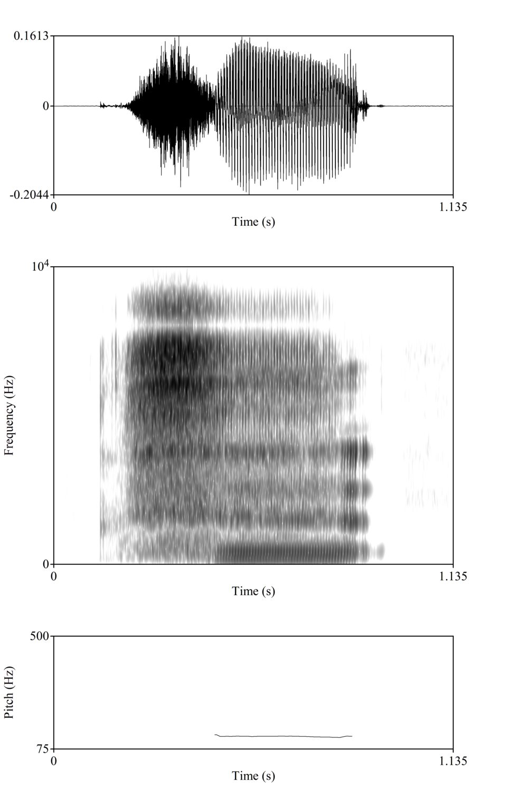
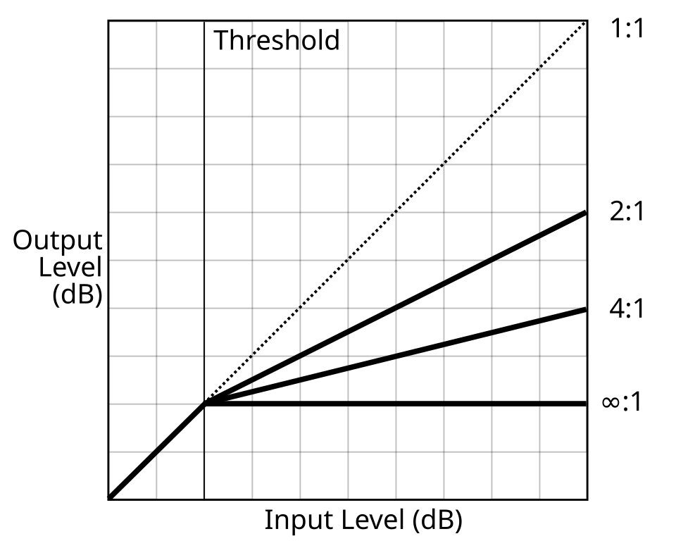
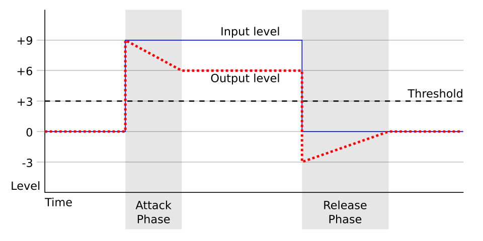
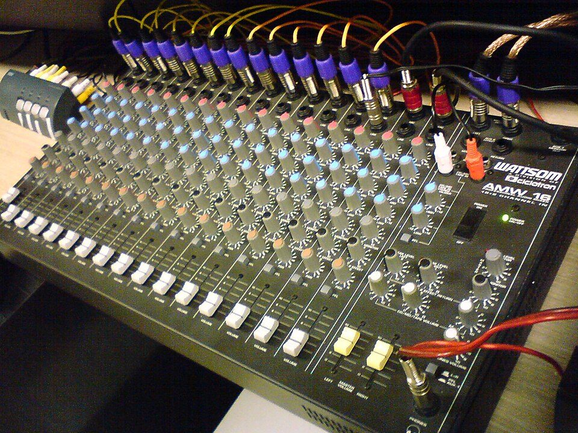
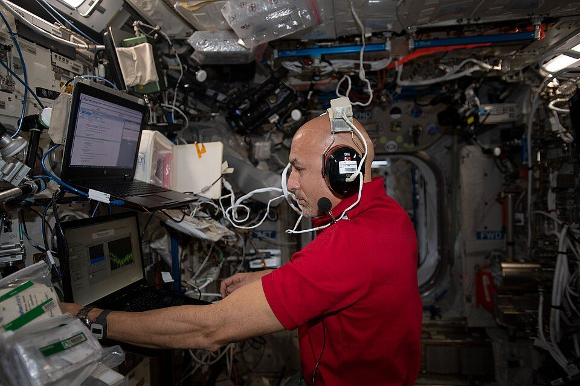

Almost every measurement an audiologist makes on speech or sound ends up as a digital file that is viewed, edited, measured and summarised with software. This topic surveys the main packages used in audiology research and teaching (MATLAB, Audacity and Adobe Audition, Praat and Python), shows how the same recording is handled in each, and sets out the data habits (folder structure, file naming, metadata, file formats and version control) that make results trustworthy and repeatable.
What it is
A toolkit of general-purpose and specialist programs for handling digital audio and the numbers derived from it: editors for listening and preparing files, phonetic analysis software for speech acoustics, and programming environments for numerical analysis, signal processing, statistics and plotting.
Why it is required
Stimulus preparation, speech and voice analysis, hearing-aid and room measurements, and clinical research all depend on correct numerical handling of sound. Choosing the wrong tool, or using the right tool without recording what was done, produces results that cannot be checked or repeated.
How it works
Each package reads sampled audio (a list of numbers at a fixed sample rate), displays it as a waveform or spectrogram, applies analysis algorithms (Fourier transform, autocorrelation, linear prediction, level calculation) and writes out new audio or tables of measurements. Scripted tools do this from a text file of commands, so the whole analysis can be rerun exactly.

Praat showing a waveform, spectrogram and pitch track of a spoken syllable.Image: Mkpoli, Wikimedia Commons, CC0
All the programs in this topic operate on the same underlying object: a digital audio signal, which is a sequence of numbers (samples) taken at regular intervals from a microphone voltage. Three properties describe it completely at file level.
Sample rate (fs, in hertz or samples per second): how many samples are stored per second. The highest frequency that can be represented is the Nyquist frequency, fs/2. Speech research commonly uses 16 kHz to 48 kHz; 44.1 kHz and 48 kHz are standard audio rates.
Bit depth: how many bits store each sample in fixed-point (integer) files. 16 bits gives 65 536 levels and a theoretical dynamic range of about 96 dB; 24 bits gives about 144 dB. Floating-point files (32-bit float) store values with an exponent and can exceed full scale temporarily without clipping.
Channels: mono (one), stereo (two) or multichannel. In audiology, the two channels of a stereo file often carry different things (left and right ear, or speech and noise) and must not be mixed by accident.
Inside analysis software, samples are almost always converted to floating-point values between −1 and +1, where ±1 is full scale, the largest value the file format can store. Levels in a file are therefore expressed in dBFS (decibels relative to full scale): 0 dBFS is the maximum possible peak, and every real signal has a negative dBFS value. dBFS says nothing about sound pressure level. To convert a file level to dB SPL you need a calibration: a recording of a known reference (for example a 94 dB SPL calibrator tone) made through the same microphone, preamplifier and gain settings.
Key ideaSoftware measures numbers in a file. Whether those numbers mean anything physical (dB SPL, dB HL, a real formant of a real talker) depends on how the file was recorded, calibrated and documented. Analysis quality is limited by acquisition quality.
The analysis algorithms used by these programs fall into a small number of families that you will meet repeatedly.
Level measures: peak level, RMS (root-mean-square) level, and short-term level contours computed frame by frame. Praat calls the contour "intensity"; editors call it amplitude statistics or loudness.
Spectral analysis: the discrete Fourier transform (computed with the fast Fourier transform, FFT) converts a short frame of samples into a spectrum. Repeating this on overlapping frames produces a spectrogram: time on the x axis, frequency on the y axis, level as darkness or colour.
Periodicity analysis: fundamental frequency (F0, heard as pitch) is estimated from the repetition period of voiced speech, most often by autocorrelation or cross-correlation methods. Praat's standard pitch algorithm is an autocorrelation method.
Resonance analysis: formants (vocal tract resonances F1, F2, F3) are estimated by linear predictive coding (LPC), which fits an all-pole filter to a short frame and reads the resonance frequencies from the positions of the poles.
Filtering and processing: digital filters, gain changes, compression and noise reduction, which change the signal rather than describe it (covered in topic 5.2).
The main packages
MATLAB (MathWorks) is a commercial numerical computing environment built around matrices. Audio is loaded as a column vector (or a matrix with one column per channel) and processed with vectorised commands. Core MATLAB reads and writes audio (audioread, audiowrite) and does FFTs and plotting; toolboxes add specialist functions: the Signal Processing Toolbox (filter design, spectrogram, pwelch, lpc, xcorr), the Audio Toolbox (for example pitch estimation and loudness measurement) and the Statistics and Machine Learning Toolbox. Much published hearing-science code, including many auditory models and psychoacoustic test frameworks, is written in MATLAB. GNU Octave is a free program with largely compatible syntax, although not every toolbox function is available.
Audacity is a free, open-source, cross-platform audio editor. It records, imports and exports many formats, edits waveforms, applies effects (amplify, normalise, filters, equalisation, compression, noise reduction), shows spectrogram views and a frequency analysis plot, and supports labels, macros and scripting. Adobe Audition is a commercial editor with a waveform (single-file) editor and a multitrack editor, a spectral frequency display for editing in the time and frequency domain together, restoration tools, loudness matching, amplitude statistics and batch processing. Both are editors first: they are excellent for listening, preparing stimuli and checking recordings, and weaker for producing tables of measurements.
Praat, written by Paul Boersma and David Weenink at the University of Amsterdam, is free software for phonetic analysis and is the de facto standard in speech science. It computes spectrograms, pitch, formants, intensity, voice quality measures (jitter, shimmer, harmonics-to-noise ratio) and supports time-aligned annotation in TextGrid files. It has its own scripting language, so any menu sequence can be turned into a script that runs over hundreds of files.
Python is a free general-purpose programming language. With the NumPy (arrays), SciPy (signal processing, statistics, file input and output), Matplotlib (plots), pandas (tables), soundfile and librosa (audio input and audio features) libraries it covers most of what MATLAB does for audio research, and the Parselmouth library gives Python access to Praat's algorithms. Jupyter notebooks combine code, output, plots and explanatory text in one document. The extended Audiology Python Primer page on this site introduces the language from the beginning.
Research tools and clinical devices
None of these packages is a medical device. They are research and teaching tools. Values they produce (an F0, a formant, a level) are valid only within the assumptions of the algorithm and the recording. When a measurement feeds a clinical decision, it should come from a validated procedure: a documented recording protocol, calibrated equipment, known analysis settings and, where relevant, normative data collected in the same way. Clinical voice and speech analysis systems exist as separate regulated products; research use of Praat or Python is a different activity from their clinical use.
Architecture and signal flow of a research analysis
Figure 5.1a shows the path that a sound takes from the microphone to a published number. Each arrow is a place where information can be lost or silently changed, so each stage should leave a record.
Figure 5.1a. Research audio workflow. The raw recording is archived untouched; every later stage works on copies and records its settings in metadata, a processing log and version-controlled scripts.
Record: choose sample rate, bit depth and gain before recording, record a calibration tone and a few seconds of room noise, and note microphone position. Clipping or a poor signal-to-noise ratio cannot be repaired later.
Raw archive: copy the original file into a raw-data folder, make it read-only, and store a checksum (a short fingerprint such as SHA-256) so that any later change can be detected.
Prepare: in an editor, cut tokens, trim silences, apply agreed gain or filtering, and save new files with new names. Log every change (topic 5.2 gives a log template).
Analyse: in Praat, MATLAB or Python, extract measurements with fixed, documented settings. Prefer scripts to hand-clicking once the settings are decided.
Measures: write results to a tidy table (one row per token or trial, one column per variable) in CSV format with a data dictionary that defines every column and unit.
Statistics and report: load the table into statistics software, make plots and run tests. Figures should be regenerated from the table by code, not edited by hand.
How Praat organises an analysis
Praat has a distinctive object-based design. Every file you open becomes an object in the Objects window. Analysis commands create new objects from existing ones (a Sound produces a Pitch, a Formant, an Intensity or a Spectrogram object), and query commands read numbers out of those objects into the Info window. Understanding this structure makes both the menus and the scripting language easier to learn.
Figure 5.1b. Praat's object structure. Analysis commands turn a Sound into derived objects; query commands read numbers out of them. A TextGrid holds time-aligned labels that can be used to choose where to measure.
Components of the software toolkit
Component
What it does
What can go wrong
Audio interface and driver
Converts microphone voltage to samples (ADC) and samples to headphone voltage (DAC); sets sample rate and input gain.
Automatic gain control or "enhancements" in the operating system alter the signal; sample-rate mismatch between software and interface causes resampling.
Audio file (container and codec)
Stores samples plus a header (rate, bit depth, channels) and sometimes text tags.
Hold measurements and descriptions of recordings in plain text readable by any program.
Decimal commas, inconsistent units, missing values coded as 0, identifying information left in files.
Version control (Git)
Records every change to scripts and text files with author, date and message.
Large audio files committed to the repository; secrets or participant data pushed to a public host.
Software comparison matrix
The table below is the model answer for the practical task in this topic. It is organised by task, because the right question is "which tool suits this task" rather than "which tool is best".
Pitch, Formant, Intensity objects; numbers in Info window or tables
Standard in speech science; free; algorithms well documented; scriptable
Settings must suit the talker; results need visual checking
Segmenting and labelling speech
Praat (TextGrid)
Audio
TextGrid annotation files
Multiple tiers, interval and point tiers, plain-text format
Manual labelling is slow; inter-rater agreement must be checked
Voice quality measures
Praat
Sustained vowel recordings
Jitter, shimmer, harmonics-to-noise ratio
Widely reported, comparable across studies when settings match
Sensitive to recording quality, microphone and settings; research values are not clinical norms
Custom signal processing and simulations (filters, hearing-aid or CI simulations)
MATLAB, Python
Audio arrays, parameters
Processed audio, plots, numbers
Complete control; vectorised maths; extensive toolboxes and libraries
Needs programming skill; MATLAB and some toolboxes need licences
Batch measurement over many files
Praat script, Python, MATLAB
Folder of audio files
One CSV table
Identical settings for every file; reproducible; fast
A bug affects every file; outputs must be spot-checked
Statistics and publication figures
Python (pandas, SciPy, Matplotlib), MATLAB, R
CSV tables
Tests, models, figures
Figures regenerated automatically when data change
Learning curve; choice of statistical model needs expertise
Psychoacoustic or listening experiments
MATLAB or Python frameworks
Stimulus files, protocol
Response logs
Adaptive procedures and timing under program control
Output level depends on sound card and transducer calibration
Exam tipWhen asked to choose software, justify it from the task: input type, output needed, whether the result must be reproduced on many files, and whether the tool's algorithm is documented and accepted in the field.
Key parameters and specifications
Most disagreements between programs analysing the same file come from different settings, not different software. The parameters below should be fixed before analysis and reported in any write-up.
Parameter
Typical value or range
Clinical and research meaning
Sample rate
16 to 48 kHz (44.1 or 48 kHz typical for stimuli)
Must be at least twice the highest frequency of interest; fricatives have energy above 8 kHz, so 16 kHz loses some of it.
Bit depth
16 or 24 bit PCM; 32-bit float for processing
Sets the quantisation noise floor. 24-bit recording leaves headroom so that peaks need not approach 0 dBFS.
Spectrogram window length
about 5 ms (wideband) or 25 to 40 ms (narrowband)
Short windows show formants and bursts in time; long windows resolve individual harmonics.
Time step (hop)
about 5 to 10 ms
Spacing of analysis frames; sets how many values a contour has per second.
Pitch floor and ceiling
typically 75 Hz floor; ceiling a few hundred hertz, set higher for children
Wrong range causes octave jumps or missing voicing; the floor also sets the analysis window length in Praat.
Maximum formant frequency (Praat)
typically about 5000 Hz for adult male, 5500 Hz for adult female, higher for children
Tells the LPC analysis how many resonances to expect in the band; a poor choice merges or splits formants.
LPC order (MATLAB, Python)
about fs/1000 + 2 (so about 18 at 16 kHz)
Enough poles for all resonances plus spectral tilt; too few merges formants, too many creates spurious peaks.
Intensity analysis minimum pitch (Praat)
about 75 to 100 Hz
Sets the smoothing window so that the contour does not ripple at F0.
Calibration reference
for example a 94 dB SPL or 114 dB SPL calibrator tone at 1 kHz
Links dBFS in the file to dB SPL at the microphone; without it, levels are relative only.
File format for analysis
WAV or FLAC (PCM, lossless)
Lossy formats alter spectra and are unsuitable for acoustic measurement.
Algorithms and equations
Peak and RMS level in dBFS
L_peak = 20 log10( max|x[n]| ) dBFS
L_rms = 20 log10( sqrt( (1/N) Σ x[n]^2 ) ) dBFS
crest factor = L_peak − L_rms dB
where x[n] are the N samples scaled so that full scale is ±1.
Worked example: a file whose largest sample is 0.5 has Lpeak = 20 log10(0.5) = −6.02 dBFS. A pure sine wave with that peak has RMS 0.5/√2 = 0.354, so Lrms = −9.03 dBFS and the crest factor is 3.01 dB. Speech is much peakier: the synthetic vowel used below has a crest factor of about 9.9 dB, and running speech with pauses usually has a crest factor well above that. This is why speech stimuli are equated by RMS (or loudness), never by peak.
Frame count and spectral resolution
frames = floor( (N − W) / H ) + 1
Δf ≈ fs / W (frequency resolution of a W-sample window)
where N is the number of samples, W the window length and H the hop (step), both in samples.
Worked example: a 0.6 s file at 16 kHz has N = 9600. A 25 ms window (W = 400) with a 10 ms hop (H = 160) gives floor(9200/160) + 1 = 57 + 1 = 58 frames. A 5 ms window (W = 80) resolves only about 16000/80 = 200 Hz, so harmonics 125 Hz apart merge and the formants appear as broad bands (a wideband spectrogram). A 30 ms window (W = 480) resolves about 33 Hz, so individual harmonics appear as horizontal lines (a narrowband spectrogram).
Fundamental frequency from autocorrelation
r[k] = Σ x[n] x[n+k]
F0 = fs / k_max
where r[k] is the autocorrelation at lag k and k_max is the lag of the largest peak inside the allowed range (fs/ceiling to fs/floor).
Worked example: at fs = 16 000 Hz with a pitch range of 60 to 400 Hz, lags from 16000/400 = 40 to 16000/60 = 266 samples are searched. If the peak is at k = 128, F0 = 16000/128 = 125.0 Hz. If the algorithm picked the peak at twice that lag (256 samples) it would report 62.5 Hz, an octave error; this is why the pitch range matters.
Formants from linear prediction
x[n] ≈ − Σ(k=1..p) a_k x[n−k]
F = angle(z) · fs / (2π)
B = −(fs / π) ln|z|
where a_k are the p LPC coefficients, z is a complex root (pole) of the polynomial 1 + a_1 z^−1 + ... + a_p z^−p, F its frequency and B its bandwidth, both in Hz.
Worked example: at fs = 16 kHz, a pole at angle 0.2945 rad and radius 0.9844 corresponds to F = 0.2945 × 16000 / (2π) = 750 Hz and B = −(16000/π) × ln(0.9844) = 5093 × 0.01572 = 80 Hz. Poles with large bandwidths (for example above 400 Hz) are usually spectral shaping, not formants, and are discarded.
File size of PCM audio
bytes = fs × (bits / 8) × channels × duration + header
where the WAV header is typically 44 bytes for a simple file.
Worked example: 5 s of mono 16-bit audio at 44.1 kHz is 44100 × 2 × 1 × 5 = 441 000 bytes of samples plus a 44-byte header, 441 044 bytes. The same audio at 24 bits is 661 500 + 44 = 661 544 bytes. The PCM data rate at 16 bits is 44100 × 16 = 705 600 bit/s per channel, compared with 128 000 bit/s for a common MP3 setting for a whole stereo file: the MP3 encoder must discard information to achieve this.
One signal, several tools: Python and MATLAB equivalents
The class demonstration uses a single file analysed in every package. For a transparent comparison, the cells below create a synthetic vowel whose true values are known (F0 = 125 Hz; resonances at 700, 1220 and 2600 Hz) and then measure it. The same file can be opened in Audacity and Praat, and the Praat values compared with these. For a gentler introduction to the language, work through the Audiology Python Primer first.
import numpy as np
from scipy import signal
from scipy.io import wavfile
fs = 16000 # sample rate (Hz)
n = int(0.6 * fs) # 0.6 s of signal
src = np.zeros(n)
src[::fs // 125] = 1.0 # pulse train, F0 = 125 Hz
x = src
for fc, bw in [(700, 80), (1220, 90), (2600, 120)]:
r = np.exp(-np.pi * bw / fs) # pole radius from bandwidth
th = 2 * np.pi * fc / fs # pole angle from frequency
x = signal.lfilter([1 - r], [1, -2 * r * np.cos(th), r * r], x)
x = signal.lfilter([1, -0.97], [1], x) # lip radiation, about +6 dB/octave
x = 0.5 * x / np.max(np.abs(x)) # peak at half of full scale
wavfile.write("vowel_a.wav", fs, (x * 32767).astype(np.int16))
print("written:", n, "samples at", fs, "Hz")
Common errorInteger samples must be converted to floating point before squaring or summing. Squaring int16 values directly can overflow and give nonsense RMS values. Always divide by 32768 (16-bit) or use a reader that returns floats, as soundfile.read and MATLAB's audioread do by default.
import numpy as np
from scipy import signal
from scipy.io import wavfile
fs, raw = wavfile.read("vowel_a.wav")
y = raw.astype(np.float64) / 32768
for win_ms in (5, 30): # wideband vs narrowband
nper = int(fs * win_ms / 1000)
f, t, S = signal.spectrogram(y, fs, window="hann", nperseg=nper,
noverlap=nper // 2, nfft=1024)
print("%2d ms window: %d frequency bins x %d frames, "
"resolution about %.0f Hz" % (win_ms, len(f), len(t), fs / nper))
5 ms window: 513 frequency bins x 239 frames, resolution about 200 Hz
30 ms window: 513 frequency bins x 39 frames, resolution about 33 Hz
Both settings give 513 frequency bins because the FFT is zero-padded to 1024 points; padding makes the plot smoother but does not improve true frequency resolution, which is set by the window length.
import numpy as np
from scipy.io import wavfile
fs, raw = wavfile.read("vowel_a.wav")
y = raw.astype(np.float64) / 32768
frame = y[4000:4640] # 40 ms from the middle
frame = frame - frame.mean()
ac = np.correlate(frame, frame, "full")[len(frame) - 1:]
lo, hi = int(fs / 400), int(fs / 60) # search 60 to 400 Hz
lag = lo + np.argmax(ac[lo:hi])
print("best lag:", lag, "samples -> F0 = %.1f Hz" % (fs / lag))
best lag: 128 samples -> F0 = 125.0 Hz
import numpy as np
import librosa
from scipy.io import wavfile
fs, raw = wavfile.read("vowel_a.wav")
y = raw.astype(np.float64) / 32768
frame = y[4000:4400] * np.hamming(400) # 25 ms Hamming frame
a = librosa.lpc(frame, order=12) # all-pole model
poles = [p for p in np.roots(a) if p.imag > 0]
est = []
for p in poles:
f = np.angle(p) * fs / (2 * np.pi) # pole angle -> Hz
bw = -fs / np.pi * np.log(np.abs(p)) # pole radius -> bandwidth
if f > 90 and bw < 400:
est.append(round(f))
print("LPC formant estimates (Hz):", sorted(est)[:3])
print("values used in synthesis: [700, 1220, 2600]")
LPC formant estimates (Hz): [752, 1246, 2605]
values used in synthesis: [700, 1220, 2600]
The F1 estimate is about 50 Hz above the value used to build the signal. This is typical of LPC on a voiced vowel with a high F0 relative to F1: the harmonics sample the resonance coarsely and the all-pole model is only an approximation. Changing the order, frame or pre-emphasis moves the estimates by tens of hertz. The lesson for research is that formant values carry method-dependent error, so settings must be fixed and reported, and results should be checked against the spectrogram by eye.
import numpy as np
from scipy.io import wavfile
fs, raw = wavfile.read("vowel_a.wav")
y = raw.astype(np.float64) / 32768
win, hop = int(0.025 * fs), int(0.010 * fs) # 25 ms window, 10 ms step
levels = []
for start in range(0, len(y) - win + 1, hop):
seg = y[start:start + win]
levels.append(20 * np.log10(np.sqrt(np.mean(seg ** 2))))
levels = np.array(levels)
print("frames:", len(levels))
print("frame RMS: min %.1f, median %.1f, max %.1f dBFS"
% (levels.min(), np.median(levels), levels.max()))
frames: 58
frame RMS: min -16.1, median -15.9, max -15.4 dBFS
The same steps in MATLAB (Signal Processing Toolbox functions marked) are shown below. The printed values should match the Python cells, because audioread scales 16-bit samples by 1/32768 in the same way.
% read and describe
[x, fs] = audioread("vowel_a.wav"); % column vector, -1 to +1
fprintf("fs = %d Hz, duration = %.2f s\n", fs, numel(x) / fs);
peak_db = 20 * log10(max(abs(x)));
rms_db = 20 * log10(sqrt(mean(x .^ 2)));
fprintf("peak %.2f dBFS, RMS %.2f dBFS\n", peak_db, rms_db);
% wideband spectrogram, 5 ms Hann window (Signal Processing Toolbox)
spectrogram(x, hann(80), 40, 1024, fs, "yaxis");
% F0 by autocorrelation (xcorr: Signal Processing Toolbox)
seg = x(4001:4640); seg = seg - mean(seg);
[r, lags] = xcorr(seg);
r = r(lags >= 0);
lo = floor(fs / 400); hi = floor(fs / 60);
[~, k] = max(r(lo + 1:hi + 1));
fprintf("F0 = %.1f Hz\n", fs / (lo + k - 1));
% formants by LPC (lpc: Signal Processing Toolbox)
seg = x(4001:4400) .* hamming(400);
a = lpc(seg, 12);
p = roots(a); p = p(imag(p) > 0);
f = angle(p) * fs / (2 * pi);
bw = -fs / pi * log(abs(p));
formants = sort(f(f > 90 & bw < 400))
Note the index shift: MATLAB arrays start at 1 and Python arrays at 0, so Python's y[4000:4640] is MATLAB's x(4001:4640). Off-by-one errors of this kind are one of the commonest reasons two scripts disagree.
Step-by-step Praat workflows
Menu names below are those of current Praat versions. Praat changes little between releases, but if a command is not where described, the Praat manual (Help menu) lists every command and its arguments.
Opening and viewing a sound
Start Praat. Two windows open: the Objects window (a list of objects) and the Picture window (for publication figures). Close or ignore the Picture window for now.
In the Objects window choose Open, then Read from file, and select the WAV file. A Sound object appears in the list, named after the file.
With the Sound selected, click View & Edit. The Sound editor opens with the waveform at the top and, below it, the analysis area.
Select a stretch by dragging in the waveform; the selection duration is shown at the top and bottom. Play it with the Tab key or by clicking the bars below the waveform. Zoom with the buttons at the bottom left (all, in, out, sel).
Check the file: listen to all of it, look for flat-topped peaks (clipping), for low-frequency drift and for noise in pauses before making any measurement.
Spectrogram
In the Sound editor, open the Spectrogram menu and make sure Show spectrogram is ticked.
Open Spectrogram settings. The defaults give a wideband display: window length about 0.005 s, view range 0 to 5000 Hz, dynamic range 70 dB. Raise the view range to 8000 Hz or more to see fricatives if the sample rate allows.
For a narrowband display that shows harmonics, set the window length to about 0.03 s and compare.
Click in the spectrogram to read the time and frequency at the cursor. Use Spectrogram, View spectral slice to open the spectrum at the cursor time as a separate object.
Pitch
Tick Pitch, Show pitch. A blue contour appears over the spectrogram, with its scale on the right.
Open Pitch, Pitch settings and set the range to the talker: for example a floor around 75 Hz for adult men and a higher floor for women and children, and a ceiling above the highest expected F0. Record the values used.
Select a voiced stretch and use Pitch, Get pitch to read the mean F0 of the selection into the Info window.
Look for octave jumps (the contour suddenly halves or doubles) and for voicing marked where there is none. Adjust the range rather than editing numbers by hand.
For voice quality, tick Pulses, Show pulses, select a stable stretch of a sustained vowel and choose Pulses, Voice report. Jitter, shimmer and harmonics-to-noise ratio are listed in the Info window.
Formants
Tick Formants, Show formants. Red dots mark the formant tracks.
Open Formant settings. The key setting is the maximum formant: typically about 5000 Hz for an adult male voice, about 5500 Hz for an adult female voice, and higher for young children; the number of formants is usually 5.
Place the cursor in the stable middle of a vowel and use Formants, Get first formant (and second, third), or Formant listing for a selection.
Check that the dots follow the dark bands in the spectrogram. If two bands are covered by one track, or one band has two tracks, change the maximum formant in steps of a few hundred hertz and re-examine.
Intensity
Tick Intensity, Show intensity. A yellow contour appears, with its dB scale on the right.
Select a stretch and use Intensity, Get intensity for the mean.
Remember that Praat reports intensity in dB assuming the sample values are pascals. Unless the recording chain was calibrated, treat these as relative values: differences between tokens recorded with identical settings are meaningful; the absolute number is not dB SPL.
TextGrid annotation
In the Objects window select the Sound, then Annotate, To TextGrid. Enter tier names, for example word phone, and name any point tiers (for example event) in the second field. A TextGrid object appears.
Select the Sound and the TextGrid together (Ctrl or Cmd click), then View & Edit. The editor shows the waveform, spectrogram and the tiers underneath.
To add a boundary, place the cursor at the right time and click the small circle at the top of the tier (or use the Boundary menu command). Click inside an interval and type its label.
Label consistently using a written convention (for example orthographic words, phonemic symbols, a code for noise or silence).
Save with Save as text file in the Objects window (select the TextGrid). The file is plain text, readable by Praat, Python (for example the textgrid or praatio packages) and MATLAB.
Scripting basics
Every menu command in Praat can be written as a script line. The easiest way to learn is to open a script window (Praat, New Praat script), then use Edit, Paste history after doing an analysis by hand: Praat pastes the commands you just clicked. The short script below measures mean F0, F1 at the midpoint and mean intensity.
# measure_vowel.praat : run from a Praat script window
sound = Read from file: "vowel_a.wav"
dur = Get total duration
pitch = To Pitch: 0, 75, 500
f0 = Get mean: 0, 0, "Hertz"
selectObject: sound
formant = To Formant (burg): 0, 5, 5500, 0.025, 50
f1 = Get value at time: 1, dur / 2, "hertz", "linear"
selectObject: sound
intensity = To Intensity: 100, 0, "yes"
db = Get mean: 0, 0, "energy"
writeInfoLine: "Mean F0: ", fixed$ (f0, 1), " Hz"
appendInfoLine: "F1 at midpoint: ", fixed$ (f1, 0), " Hz"
appendInfoLine: "Mean intensity: ", fixed$ (db, 1), " dB (relative)"
Points to notice: each command that creates an object returns its number, which is stored in a variable; selectObject makes a previous object active again before the next command; fixed$ formats a number to a fixed number of decimals. To process a folder, a script typically uses Create Strings as file list, loops over the files with for i to n, and appends one line per file to a text table with appendFileLine. The synthetic vowel should give a mean F0 close to 125 Hz; compare F1 with the Python LPC estimate and with the synthesis value.
RememberA Praat script is itself a research record. Save it with the data, note the Praat version (Praat, About Praat), and never report values measured with settings that are not written down.
Research data organisation and reproducibility
Reproducibility means that someone else (or you, a year later) can take the same raw data and the same code and obtain the same numbers. It depends far more on habits than on software. The principles below are simple; most failures come from skipping them under time pressure.
Folder structure
hearing-study/
README.md # what the project is, how to run the analysis
environment.txt # software names and versions used
data/
raw/ # original recordings, never edited (read-only)
interim/ # trimmed or segmented copies
processed/ # final inputs to the analysis
metadata/
participants.csv # coded IDs only, no names or contact details
recordings.json # device, gain, calibration, room, date
data_dictionary.csv # every column: meaning, unit, allowed values
scripts/ # Praat, MATLAB and Python code, numbered in run order
results/
tables/ # CSV outputs written by scripts
figures/ # plots written by scripts
logs/ # processing logs for any hand editing
File naming
Use one fixed pattern that encodes the key facts, in a fixed order, separated by underscores: for example P012_S1_quiet_sent03_take1.wav (participant, session, condition, item, take).
Zero-pad numbers (P012, sent03) so that files sort correctly. Write dates as YYYY-MM-DD (2026-12-10) for the same reason.
Use only letters, digits, hyphens and underscores; no spaces, no characters with accents, no dots except before the extension.
Never put names, hospital numbers or other identifiers in file names. Keep the key linking codes to identities separately and securely, as the ethics approval specifies.
Never overwrite. A processed file gets a new name or goes in a new folder, for example P012_S1_quiet_sent03_take1_hp80_norm-23LUFS.wav, or better, a short name plus a log entry.
Metadata
Metadata is data about data: what was recorded, how and with what. Without it, a WAV file is a list of numbers. At minimum record: participant code, date, room, microphone model and position, preamplifier gain, audio interface, sample rate and bit depth, calibration tone file and its level, software and version, and any processing applied. JSON (JavaScript Object Notation) is convenient for this because it is plain text, supports nested fields and is readable by every language. CSV (comma-separated values) is best for rectangular tables of measurements.
import csv, json
row = {"participant": "P012", "condition": "quiet", "token": "a",
"f0_hz": 125.0, "f1_hz": 752, "f2_hz": 1246, "rms_dbfs": -15.9}
with open("P012_measures.csv", "w", newline="") as fh:
w = csv.DictWriter(fh, fieldnames=list(row))
w.writeheader()
w.writerow(row)
meta = {"file": "P012_quiet_a_take1.wav", "fs_hz": 16000,
"bit_depth": 16, "channels": 1, "mic": "omni, 30 cm",
"calibration": "94 dB SPL tone recorded in cal_P012.wav",
"software": {"python": "3.x", "praat": "record version"},
"processing": []}
with open("P012_quiet_a_take1.json", "w") as fh:
json.dump(meta, fh, indent=2)
print(open("P012_measures.csv").read().strip())
Good table habits: one row per observation, one column per variable, units in the column name (f0_hz, rms_dbfs), a full stop as decimal separator, missing values left empty or coded as NA (never 0), and no merged cells, colours or comments that carry information. Spreadsheet programs can silently convert values that look like dates or numbers; open CSV files carefully and keep the master copy written by the script.
Version control and reproducible analysis
Keep scripts in a Git repository. Each commit records exactly what changed, when and why (the commit message). Tag the version used for a thesis chapter or paper.
Do not commit large audio files or any participant data to a public repository. Store audio on institutional storage with backups, and record checksums so that files can be verified.
Record the software environment: Praat version, MATLAB release and toolboxes, Python version and library versions (for example with pip freeze > environment.txt).
Fix random seeds in any simulation or randomised stimulus order, and save the seed with the results.
Make the analysis run from raw data to figures with scripts. Anything done by hand (editing in Audacity, labelling in Praat) must be logged in enough detail to repeat.
Follow the FAIR principles where data will be shared: data should be findable, accessible, interoperable and reusable, with open formats and clear metadata, within the limits of consent and data-protection law.
Audio and data file formats
A file format has two layers: the container (how the file is organised, with its header) and the encoding (how the samples are represented). WAV is a container that normally holds uncompressed PCM (pulse-code modulation) samples. FLAC stores the same samples with lossless compression: after decoding, every sample is identical to the original. MP3 and AAC use perceptual (lossy) coding: a psychoacoustic model decides which parts of the spectrum are masked and quantises them coarsely or discards them. The decoded file sounds similar but its samples, spectrum and noise floor are different.
Figure 5.1c. The same PCM samples stored three ways. Only lossless storage returns the original samples, so only WAV (PCM) and FLAC are suitable for acoustic measurement and stimulus masters.
import os
import numpy as np
import soundfile as sf
fs = 44100
rng = np.random.default_rng(1)
t = np.arange(fs * 5) / fs # 5 s mono
x = 0.3 * np.sin(2 * np.pi * 220 * t) * (1 + 0.5 * np.sin(2 * np.pi * 3 * t))
x += 0.01 * rng.standard_normal(len(t)) # a little noise
sf.write("test16.wav", x, fs, subtype="PCM_16")
sf.write("test24.wav", x, fs, subtype="PCM_24")
sf.write("test16.flac", x, fs, subtype="PCM_16")
for fn in ("test16.wav", "test24.wav", "test16.flac"):
print("%-12s %8d bytes" % (fn, os.path.getsize(fn)))
print("PCM data rate, 16 bit:", fs * 16, "bit/s")
The WAV sizes match the formula exactly. FLAC saved about a third for this noisy test signal; the saving depends on the content (silence compresses well, noise poorly) and is never guaranteed.
Format
Type
Typical use in audiology
Cautions
WAV (PCM)
Uncompressed audio
Recording, stimuli, analysis, calibration files
Large; classic WAV has a 4 GB size limit (extensions such as RF64 exist); check sample rate and bit depth on export.
AIFF
Uncompressed audio
Same as WAV, common on older Apple systems
Readable by most tools; no advantage over WAV for analysis.
FLAC
Lossless compressed audio
Archiving and sharing large datasets
Some older players and toolboxes cannot read it; decode to WAV if needed.
MP3, AAC (M4A), Ogg Vorbis, Opus
Lossy compressed audio
Listening copies, streaming, patient information recordings
Not for measurement: alters spectra, adds pre-echo and coding noise, and may add delay and padding at the start.
CSV
Plain-text table
Measurements, trial-by-trial responses, audiogram data
Decimal and separator conventions; spreadsheet auto-conversion; needs a data dictionary.
JSON
Plain-text structured data
Metadata, settings, device configurations
Keep a consistent schema (same field names) across files.
TextGrid
Praat annotation (plain text)
Segment and event labels aligned to audio
Must stay paired with the exact audio file it was made on.
MAT, NPY / NPZ
Binary arrays (MATLAB, NumPy)
Intermediate numerical results
Tied to one environment; export final results to CSV for sharing.
Clinical applications
Stimulus preparation: speech-audiometry word lists, sentence-in-noise materials and local-language test materials are recorded, cut, equalised in RMS level and checked in an editor, then verified numerically in Praat or Python before use.
Voice and speech analysis in hearing loss: F0, intensity and formant measures document speech changes in children with hearing loss or after cochlear implantation, as research outcomes alongside perceptual ratings.
Calibration and room checks: a recording of a calibrator and of the test room lets you check the level of stimuli, background noise and the spectrum of masking noise in software.
Hearing-aid and cochlear-implant research: MATLAB and Python are used for simulations (vocoders, compression, noise reduction) and for analysing coupler or ear-simulator recordings of hearing-aid output.
Electrophysiology and data analysis: exported ABR, OAE or ASSR data are often reanalysed in MATLAB or Python for research measures that clinical software does not provide.
Clinical audit and service research: audiogram and outcome data exported as CSV are summarised with scripts, with identifiers removed.
Clinical linkIf a locally developed word list is prepared in Audacity and its tokens are levelled by peak instead of RMS, some words will be systematically softer than others and the list will not be equivalent in difficulty. Numerical checks in Praat or Python catch this before patients are tested.
Limitations, errors and troubleshooting
Problem
Likely cause
What to check or do
Praat pitch contour jumps to half or double
Octave error; pitch range too wide or wrong for talker
Set floor and ceiling to the talker; inspect narrowband spectrogram harmonics.
Formant tracks cross or miss a band
Maximum formant setting unsuited to vocal tract length; nasal or breathy voice
Try values a few hundred hertz higher and lower; measure only in stable vowel portions; check visually.
Two programs give different RMS values for the same file
Different scaling (int vs float), channel handling, inclusion of silences, or A-weighting
Check how each program scales samples; trim to identical segments; compare on a pure tone of known level first.
File plays at wrong speed or pitch
Sample rate in header differs from the rate assumed by the software
Inspect the header (Audacity project rate, soundfile.info, audioinfo); resample properly instead of relabelling.
Script works on one file, fails on others
Stereo files, different sample rates, very short files, spaces in names
Check all file properties first in a loop; enforce the naming scheme.
Results cannot be reproduced months later
Undocumented hand steps, changed library versions, overwritten files
Keep raw data read-only, version-control scripts, record environment and log manual steps.
Spectral measures differ after sharing
File converted to MP3 or AAC by a messaging or cloud service
Share WAV or FLAC in archives; verify checksums after transfer.
Intensity values quoted as dB SPL
Praat intensity or dBFS mistaken for calibrated level
Report as relative dB unless a calibration tone links the file to SPL.
Demonstration
Equipment and software: a laptop with Audacity, Praat and either MATLAB or Python (Jupyter) installed; good headphones or a speaker; the vowel_a.wav file created above and one short natural recording (for example a sentence recorded at 44.1 kHz, 24-bit, with a few seconds of silence at the start).
Create vowel_a.wav with the Python cell, and show its known parameters (F0 125 Hz, resonances 700, 1220 and 2600 Hz).
Open the file in Audacity. Show the waveform, zoom in until individual periods (8 ms apart) are visible, and switch the track to a spectrogram view. Use the frequency analysis plot (Plot Spectrum) on a selection and point out the harmonics spaced 125 Hz apart.
Open the same file in Praat. Show the wideband spectrogram with formant tracks and the pitch contour. Read F0, F1, F2 and F3 at the midpoint and write them on the board.
Change Praat's spectrogram window from 0.005 s to 0.03 s and show harmonics appearing; relate this to the Δf ≈ fs/W equation.
Run the Python cells (or the MATLAB script). Compare F0, formant and level values across the three tools in a table on the board. Discuss why formant values differ by tens of hertz (method and settings) while F0 agrees closely.
Repeat with the natural sentence. Add a TextGrid with a word tier, label three words, and run the Praat script to measure one vowel.
Export the sentence from Audacity as MP3, reopen it in Praat and compare the spectrogram above about 16 kHz and in quiet regions with the WAV version. Students should observe missing high-frequency content and changed low-level detail.
Finish by showing the folder layout, a JSON metadata file and a Git log of the scripts used in the demonstration.
Students should observe that the three tools agree when settings are matched, that each tool has a distinct strength (editing, phonetic measurement, custom computation), and that settings and file format change measurements.
Current developments
Notebook-based and literate analysis (Jupyter, MATLAB Live Scripts, Quarto and similar tools) that keeps code, results and explanation together is becoming the normal way to share research analyses.
Python libraries now wrap established algorithms, for example Parselmouth for Praat's analyses, allowing phonetic measures inside larger automated pipelines.
Automatic speech recognition and forced alignment tools can produce draft TextGrid segmentations, which are then checked and corrected by hand, reducing labelling time for large corpora.
Open data and open code expectations from journals and funders are increasing, together with standards for describing datasets and for depositing them in repositories under appropriate access controls.
Containerised environments (for example Docker) and environment files make it possible to rerun an analysis with the exact library versions used originally.
Practical activity and assessment
Task: create a software comparison matrix from direct experience with one common dataset.
Record (or use a supplied) short speech file: one sustained vowel and one sentence, WAV, at least 44.1 kHz, 16 or 24 bit, with a calibration tone if available. Name it using the course naming scheme and write a JSON metadata file.
Open the file in Audacity (or Audition). Note duration, peak level and what the spectrogram shows. Record in a log what you did.
Analyse the vowel in Praat: mean F0, F1 to F3 at the midpoint, mean intensity, with the settings written down.
Analyse the same vowel in Python or MATLAB using the cells above (adapted to your file). Record the same measures.
Build the comparison matrix with columns task, software, input, output, advantages and limitations, covering at least six tasks. Add a short results table comparing the values from Praat and Python or MATLAB and explain any differences.
Organise everything in the course folder structure and submit it as a single compressed folder.
Deliverable: the folder (audio, metadata, scripts, CSV results, figures), the comparison matrix (one page) and a half-page reflection on which tool you would choose for three given scenarios. Assessment weight: correctness of measurements and settings, quality of the matrix, and completeness of documentation.
References
Boersma, P., and Weenink, D. Praat: doing phonetics by computer (software and manual). https://www.praat.org
Boersma, P. (2001). Praat, a system for doing phonetics by computer. Glot International, 5(9/10), 341 to 345.
Audio editors let us cut, level, filter, compress, clean and mix recordings. Audiologists use them to prepare speech and noise stimuli, calibration tones and counselling material, and to tidy recordings before analysis. Every edit changes the signal, so this topic explains what each operation does to the numbers, how to do it safely in Audacity or Adobe Audition, and how to keep a log that makes the result reproducible and defensible.
What it is
Digital audio editing is the controlled modification of sampled sound: selecting and removing regions, changing gain, shaping level over time (fades, compression, gating), changing the spectrum (filters and equalisation), reducing noise and artefacts, and combining several recordings on a timeline (multitrack mixing) before exporting a new file.
Why it is required
Test materials must have controlled levels, clean onsets, known signal-to-noise ratios and correct calibration tones. Recordings for analysis often need trimming or hum removal. Done carelessly, the same operations can clip the signal, change its spectrum or remove the very features being measured.
How it works
Each operation is a mathematical transformation of the sample values: multiplication by a gain (constant or time-varying), a digital filter (a weighted sum of current and past samples), a level-dependent gain (dynamics processing), or a frequency-domain modification (noise reduction). The editor applies it either immediately to the stored samples (destructive) or as a set of instructions applied at playback or export (non-destructive).

Compression ratio: above the threshold, output level rises more slowly than input level.Image: Iain Fergusson, Wikimedia Commons, Public domain

Attack and release: how quickly a compressor reacts when the input level rises and falls.Image: Iainf, Wikimedia Commons, CC BY-SA 3.0

A mixing console with channel faders, EQ and routing, the hardware equivalent of a multitrack editor.Image: Rodrigo César, Wikimedia Commons, Public domain
Background and principle of operation
Samples, full scale and decibels
An editor stores audio as sample values. In floating-point form, ±1 is full scale (0 dBFS). Nearly all editing operations are expressed in decibels, because hearing and audio equipment are described in decibels. A gain of G dB multiplies every sample by A = 10G/20. A +6 dB gain roughly doubles amplitude; +20 dB multiplies it by 10; −6 dB halves it. Power follows 10G/10, so +3 dB doubles power and +10 dB multiplies it by 10.
If a gain pushes any sample beyond ±1 and the result is then stored in a fixed-point format (16 or 24 bit integer), the sample is clipped: its value is replaced by the largest representable value. Clipping creates harmonic and intermodulation distortion that cannot be removed afterwards. Modern editors often process in 32-bit floating point, where values above 1 are held internally; clipping then happens only when the audio is exported to an integer format or played through the sound card. This is convenient and dangerous at the same time: a waveform can look fine in the editor and still clip on export.
Destructive and non-destructive editing
In destructive editing, an operation rewrites the stored samples. Undo works only while the program keeps its history; once the file is saved over the original, the old samples are gone. In non-destructive editing, the original audio file is never changed. The editor stores references (which part of which file, at what gain) and a list of effects with their settings; the result is computed on playback and written to a new file only on export ("rendering"). The effect settings stay editable at any time.
Figure 5.2a. Destructive and non-destructive editing. In both cases the safe rule is the same: keep the original file untouched and write results to a new file.
In Adobe Audition the Waveform editor works destructively on one file (changes become permanent when the file is saved), while the Multitrack editor is non-destructive and stores a session file that refers to the audio. Audacity imports audio into a project; effects applied from the Effect menu change the project's copy of the audio (destructive within the project, but the original file on disk is not touched unless you export over it). Recent Audacity versions also offer real-time effects that stay editable until they are applied. Whatever the software, the working rule is: never save or export over the raw recording.
Basic waveform operations
Selection: a time range (and in multitrack editors, a set of tracks). Zoom in until individual cycles are visible before making precise cuts, and use snapping to zero crossings where available, so that cuts do not create a step in the waveform.
Cut, copy, paste, delete: remove or move a region. A cut in the middle of sound joins two points that may have different values, producing an audible click. A short crossfade (a few milliseconds) at the join prevents this.
Trim (crop): keep only the selection and discard the rest, for example to remove the lead-in before a word.
Silence: replace the selection with zero-valued samples (the duration is kept). This is different from delete, which shortens the file. Note that digital silence (all zeros) sounds different from room tone; inserting zeros in a speech recording with background noise produces an unnatural gap.
Fade: a gradual gain change at the start (fade-in) or end (fade-out) of a region. Stimuli need short fades (ramps), typically a few milliseconds to tens of milliseconds, to avoid onset and offset clicks that spread energy across frequency.
Gain (amplify): multiply the selection by a constant.
Normalise: compute the gain that brings a level measure to a target, then apply it. Peak normalisation sets the largest sample to a target (for example −1 dBFS). RMS or loudness normalisation sets the average level (RMS in dBFS, or loudness in LUFS, loudness units relative to full scale, computed with the ITU-R BS.1770 method) to a target. For speech stimuli that must sound equally loud, RMS or loudness normalisation is appropriate; peak normalisation is not, because two words with the same peak can differ in RMS by several decibels.
DC offset removal: subtract the mean value so the waveform is centred on zero. A DC offset wastes headroom and causes clicks at edits.
Fade shapes
The shape of a fade determines how quickly loudness changes. A linear fade changes amplitude in equal steps, which sounds like a slow start followed by a fast rise, because hearing is roughly logarithmic. A logarithmic (exponential in amplitude) fade changes level in equal decibel steps, which sounds more even for long fades. An S-curve (for example a raised cosine) starts and ends gently; it is the usual choice for short stimulus ramps because its smooth corners spread the least energy into other frequencies. For crossfades between two signals, an equal-power pair (gains cos θ and sin θ) keeps the combined power constant when the signals are uncorrelated.
Figure 5.2b. Three fade-in shapes. Left: linear gain. Right: the same curves in decibels. The logarithmic fade rises by equal decibel steps (a straight line on the right); the linear fade spends most of its time near full level in decibel terms.
Dynamic range processing
Dynamic range is the difference in level between the loudest and softest parts of a signal. Dynamics processors apply a gain that depends on the signal's own level.
A compressor reduces gain when the level exceeds a threshold. The ratio R says how many decibels of input change produce one decibel of output change above threshold (4:1 means a 12 dB input rise becomes 3 dB). The knee sets whether the change from unity gain to compression is abrupt (hard knee) or gradual over a knee width (soft knee). Attack time sets how quickly gain reduction is applied after the level rises; release time sets how quickly gain recovers after the level falls. Make-up gain raises the whole output afterwards to compensate for the reduction.
A limiter is a compressor with a very high ratio (often described as 10:1 to ∞:1) and fast attack, used to stop peaks exceeding a ceiling. A brick-wall or look-ahead limiter delays the audio slightly so that it can reduce gain before the peak arrives.
An expander does the opposite below a threshold: it reduces gain further as level falls, increasing dynamic range. A noise gate is an extreme expander that mutes the signal below the threshold, used to silence background noise between words. Poorly set gates chop off soft word endings and make background noise pump on and off.
Hearing-aid wide dynamic range compression (WDRC) uses the same concepts (threshold or kneepoint, ratio, attack, release) for a different purpose: fitting the range of everyday sounds into the reduced dynamic range of an impaired ear. In an editor, compression is used to control the level of recordings. Its clinical relevance is that any compression applied to a speech stimulus changes its temporal envelope, and envelope cues matter to listeners with hearing loss and cochlear implants.
Modulation effects
Amplitude modulation (AM) multiplies a signal by a slowly varying gain. With a sinusoidal modulator at rate fm and depth m (0 to 1), the envelope rises and falls fm times per second. In an editor this effect is called tremolo. In the spectrum, AM of a tone at fc creates two sidebands at fc ± fm. AM matters in audiology because speech intelligibility depends on slow envelope modulations (roughly 2 to 20 Hz), because the auditory steady-state response (ASSR) uses amplitude-modulated tones, and because modulated noise is used to study listening in the dips.
Frequency modulation (FM) varies the instantaneous frequency around a centre frequency. The frequency deviation Δf is the maximum departure from the centre and the modulation rate fm is how often it swings. Warble tones used in sound-field audiometry are FM tones: the continuous frequency variation reduces standing waves in the test room. Editors expose FM only indirectly (vibrato, pitch-shifting, chorus and flanger effects use time-varying delay, which produces FM). These creative effects have no place in stimulus preparation unless modulation is the variable under study.
Filters and equalisation
A filter changes the relative level of different frequencies. Equalisation (EQ) is the audio engineering name for filters used to shape the spectrum. The main types are:
High-pass (low-cut): passes frequencies above a cutoff and attenuates those below, at a slope such as 12 dB per octave (second order) or 24 dB per octave (fourth order). Used to remove rumble, handling noise, wind and air-conditioning noise below about 60 to 100 Hz in speech recordings.
Low-pass (high-cut): passes frequencies below a cutoff. Used to limit bandwidth, to simulate a restricted bandwidth, or to reduce hiss.
Band-pass and band-stop (notch): pass or remove a band. A narrow notch at 50 Hz (India, Europe) or 60 Hz (the Americas) and its harmonics removes mains hum.
Shelving: raises or lowers everything above (high shelf) or below (low shelf) a corner frequency by a fixed amount, like a treble or bass control.
Peaking (parametric): boosts or cuts a band around a centre frequency f0 by a gain G, with a width set by the quality factor Q (higher Q, narrower band). A parametric equaliser offers several such bands with adjustable f0, G and Q.
Graphic equaliser: a bank of fixed-frequency bands (often at octave or one-third-octave spacing) with a gain slider each. Easy to use; less precise than parametric EQ.
Figure 5.2c. Magnitude responses of the main EQ filter types, 20 Hz to 20 kHz on a logarithmic axis; the dashed line is 0 dB and the vertical range is +12 to −30 dB. Curves are computed from second-order (biquad) designs.
Noise reduction and restoration
Broadband noise reduction in editors works in the frequency domain. The editor first learns a noise profile: the average magnitude spectrum of a selection that contains only noise (the "noise print" in Audition). It then splits the whole recording into short overlapping frames, computes each frame's spectrum, and reduces every frequency bin whose level is close to the noise profile, while leaving bins well above it. The simplest form of this is spectral subtraction: subtract the noise magnitude from each bin and keep the original phase. Real products use refinements (smoothing over time and frequency, gain floors, psychoacoustic rules), but the principle is the same.
The method assumes the noise is stationary (its spectrum does not change over time), like fan hum, hiss or steady air-conditioning noise. It works poorly for babble, music or intermittent noise. Aggressive settings cause characteristic artefacts:
Musical noise: random bins that briefly exceed the threshold survive as short tonal chirps, a watery or twinkling sound.
Dull or muffled speech: weak high-frequency speech cues (fricatives, consonant bursts) lie near the noise level and are removed with the noise.
Pumping or gating: the background comes and goes with speech.
Smearing: onsets and offsets are blurred by the frame-based processing.
Other restoration tools target specific faults: click removal detects short impulsive spikes and interpolates across them; hum removal uses notch filters at the mains frequency and its harmonics; de-clipping tries to reconstruct flattened peaks by interpolation (an estimate, never the original); spectral repair in a spectral editor lets you paint out a narrow event such as a phone ring or cough.
Common errorNoise reduction changes acoustic measures. Harmonics-to-noise ratio, jitter, shimmer, spectral tilt and consonant cues can all change after processing. If a recording is to be analysed acoustically, analyse the unprocessed recording (or a version with only documented high-pass filtering), and treat noise reduction as a listening aid, not an analysis step.
Multitrack editing and mixing
A multitrack editor places several recordings (tracks) on a common timeline. Each track has its own controls: gain (fader), pan (position between left and right), mute (silence this track), solo (hear only this track, or only the soloed tracks) and, often, an envelope (automation line) that changes gain or pan over time. Track outputs are summed on a bus: the master bus feeds the export, and additional buses can group tracks (for example all noise tracks) so that one fader controls them together.
Panning uses a pan law to decide the left and right gains. With a constant-power law (the most common, often called −3 dB pan law), a centred track is sent to each side at −3 dB so that the total acoustic power stays constant as the track moves across. Other laws (−6 dB, −4.5 dB, or 0 dB balance controls) exist, and different programs use different defaults. For clinical stimuli this matters: a track panned to the centre is not at its full level in each channel, so channel levels must be measured, not assumed.
Figure 5.2d. Multitrack signal flow for preparing a speech-in-noise stimulus. M/S stands for mute and solo. The noise fader sets the signal-to-noise ratio; the calibration tone track is exported separately.
Export: sample rate, bit depth, dither and format
Export converts the internal (usually 32-bit float) project into a file. The choices are:
Sample rate: keep the rate of the source or the rate required by the playback system (for example 44.1 or 48 kHz). If the rate changes, the editor must resample, which uses a low-pass filter and interpolation; a good resampler is inaudible but does change samples.
Bit depth: 16-bit PCM is standard for distribution; 24-bit PCM or 32-bit float is preferred for masters and for files that will be processed again.
Dither: when reducing bit depth (float or 24 bit to 16 bit), a very small random noise is added before rounding. Without it, rounding error is correlated with the signal and appears as distortion on quiet sounds and fade tails; with it, the error becomes a steady, benign noise floor. Triangular (TPDF) dither of about ±1 least significant bit is the standard choice; noise-shaped dither moves the noise to frequencies where hearing is less sensitive. Dither is needed only when the bit depth is reduced, and should be applied once, at the final export.
Format: WAV (PCM) or FLAC for anything that will be measured, used as a stimulus or archived; MP3 or AAC only for listening copies (topic 5.1).
Channels: mono or stereo as intended; a two-channel stimulus with speech in one channel and noise in the other must not be exported as a mixed-down mono file.
Architecture and signal flow of an editing session
The order of operations matters because most operations are not interchangeable. Figure 5.2e shows a safe general order for cleaning and preparing a speech recording. Not every step is needed every time; the rule is to do the minimum that achieves the purpose.
Figure 5.2e. A safe general order for preparing a speech recording. Level setting (normalisation) comes after all processing that changes level, and dither is applied once, at the final export.
Working copy: duplicate the raw file (or import it into a project) and give the output a new name. Listen to the whole file and look at the spectrogram before changing anything.
Clean-up edits: remove DC offset, trim unwanted lead-in and tail, remove isolated clicks. These are structural and do not depend on later steps.
High-pass filter: removes energy below the speech range that would otherwise confuse level meters, compressors and noise profiles.
Noise reduction: only if the noise is stationary and the purpose allows it; use the gentlest setting that works and compare before and after.
EQ: corrective shaping (for example removing a resonance) or deliberate shaping required by the protocol.
Compression: only if level control is required (for example for counselling recordings); not usually for test stimuli, whose natural envelope should be preserved.
Normalisation: set the final level (RMS or loudness for equal loudness; peak with a safety margin to prevent clipping). Check that no sample exceeds full scale.
Export: choose format, sample rate and bit depth, add dither if the bit depth is reduced, and write a new file. Update the processing log.
Components of an audio editor
Component
Function
What can go wrong
Waveform display and selection tools
Show amplitude against time; select regions; zoom to sample level.
Edits made at a coarse zoom miss small clicks or cut into word onsets.
Spectrogram or spectral display
Time and frequency view for finding hum, noise and events.
Meters with different ballistics or weighting give different numbers.
Effects (processing) engine
Gain, filters, dynamics, modulation, restoration.
Effect applied to the wrong selection or track; preview level differs from rendered result.
Undo history
Reverses edits within a session.
Lost when the program closes or the file is saved destructively.
Track mixer and buses
Per-track fader, pan, mute, solo; summing.
Hidden fader or pan offsets; soloed track forgotten at export.
Project or session file
Stores references and settings (for example Audacity .aup3, Audition .sesx).
Moved or renamed source files break a session; projects are not audio files for sharing.
Import and export module
Reads and writes formats, resamples, dithers.
Unintended resampling, format conversion or bit-depth reduction.
Batch tools (macros, batch process, favourites)
Apply the same chain to many files.
One wrong step repeated on every file; need spot checks.
Key parameters and specifications
Parameter
Typical value or range
Clinical and practical meaning
Peak normalise target
about −1 to −3 dBFS
Leaves headroom for resampling and lossy players, which can create inter-sample peaks above 0 dBFS.
RMS or loudness target for stimuli
set by protocol, for example −20 to −26 dBFS RMS; broadcast loudness is often −23 LUFS
Equal RMS across items gives comparable presentation levels once the audiometer is calibrated to the calibration tone.
Stimulus onset and offset ramps
typically 2 to 25 ms, raised-cosine
Prevents clicks and spectral splatter; very short ramps are audible as clicks at high levels.
Compressor threshold
−40 to −10 dBFS
Level above which gain is reduced.
Compressor ratio
about 1.5:1 to 4:1 for gentle control; 10:1 and above for limiting
Higher ratios flatten the speech envelope more.
Attack time
about 1 to 30 ms
Short attack catches onsets but can distort; long attack lets onsets through (overshoot).
Release time
about 50 to 1000 ms
Short release makes background noise pump up between words; long release keeps gain reduced after loud sounds.
Knee width
0 (hard) to about 12 dB (soft)
Soft knee makes the onset of compression less audible.
High-pass cutoff for speech clean-up
about 60 to 100 Hz, 12 to 24 dB/octave
Removes rumble without affecting most voice fundamentals; take care with low adult male voices.
Peaking EQ Q
about 0.5 (broad) to 10 (narrow notch)
Q of about 1.4 corresponds to a bandwidth of about one octave.
Noise reduction amount
about 6 to 12 dB for gentle use
Larger values increase artefacts and remove weak consonant cues.
Export format
WAV PCM 16 or 24 bit, 44.1 or 48 kHz
Lossless, universally readable; matches most audiometer and software players.
Pan law
−3 dB (constant power) typical; −6 dB and 0 dB also used
Determines channel levels of centred tracks; measure rather than assume.
Algorithms and equations
Gain and normalisation
A = 10^(G / 20) G = 20 log10(A) dB
G_norm = L_target − L_measured dB
where A is the linear amplitude factor, G the gain in dB, and L the peak or RMS level in dBFS.
Worked example: a file peaks at 0.5 (−6.02 dBFS). Peak normalisation to −1 dBFS needs G = −1 − (−6.02) = 5.02 dB, a factor of 105.02/20 = 1.783. The RMS level rises by the same 5.02 dB, because a constant gain shifts every level measure equally.
import numpy as np
peak = 0.5 # current peak (linear, full scale = 1)
target_dbfs = -1.0 # normalise target
peak_dbfs = 20 * np.log10(peak)
gain_db = target_dbfs - peak_dbfs
print("current peak: %.2f dBFS" % peak_dbfs)
print("gain needed: %.2f dB = x%.3f" % (gain_db, 10 ** (gain_db / 20)))
for g in (-6, 3, 6, 10, 20):
print("%+3d dB -> amplitude x%.3f, power x%.2f" % (g, 10 ** (g / 20), 10 ** (g / 10)))
current peak: -6.02 dBFS
gain needed: 5.02 dB = x1.783
-6 dB -> amplitude x0.501, power x0.25
+3 dB -> amplitude x1.413, power x2.00
+6 dB -> amplitude x1.995, power x3.98
+10 dB -> amplitude x3.162, power x10.00
+20 dB -> amplitude x10.000, power x100.00
Fade curves
linear: g(u) = u
logarithmic: g(u) = 10^((−D + D u) / 20), g(0) = 0
S-curve: g(u) = 0.5 − 0.5 cos(π u)
equal-power crossfade: g_out = cos(πu/2), g_in = sin(πu/2)
where u runs from 0 to 1 through the fade and D is the decibel range of the logarithmic fade (for example 60 dB).
import numpy as np
u = np.array([0, 0.25, 0.5, 0.75, 1.0]) # position within the fade
linear = u
log_db = 10 ** ((-60 + 60 * u) / 20) # rises 60 dB in equal dB steps
log_db[0] = 0.0 # start from true silence
s_curve = 0.5 - 0.5 * np.cos(np.pi * u) # raised-cosine S-curve
np.set_printoptions(precision=3, suppress=True)
print("u ", u)
print("linear ", linear)
print("log (dB) ", log_db)
print("S-curve ", s_curve)
Halfway through, the linear fade is at 0.5 (−6 dB), the S-curve also at 0.5, and the 60 dB logarithmic fade at 0.032 (−30 dB). At the equal-power crossfade midpoint each signal has gain cos(π/4) = 0.707 (−3.01 dB), so the two uncorrelated signals sum to constant power.
Compressor static curve and gain reduction
hard knee: y = x for x ≤ T
y = T + (x − T) / R for x > T
soft knee (width W), for |x − T| ≤ W/2:
y = x + (1/R − 1)(x − T + W/2)^2 / (2W)
gain reduction GR = x − y; output = y + M
where x and y are input and output levels in dB, T the threshold, R the ratio, W the knee width in dB and M the make-up gain.
Worked example: T = −30 dBFS, R = 4:1, hard knee. An input at −10 dBFS is 20 dB above threshold, so the output is −30 + 20/4 = −25 dBFS and the gain reduction is 15 dB. With make-up gain of 10 dB the output becomes −15 dBFS. The cell below adds a 10 dB soft knee: inputs from −35 to −25 dBFS fall in the knee and are compressed gradually.
import numpy as np
def static_gain(x_db, T=-30.0, R=4.0, W=10.0, makeup=0.0):
"""Soft-knee compressor gain computer, levels in dBFS."""
d = x_db - T
if 2 * d < -W:
y = x_db # below knee: unity
elif 2 * abs(d) <= W:
y = x_db + (1 / R - 1) * (d + W / 2) ** 2 / (2 * W)
else:
y = T + d / R # above knee
return y + makeup
for x in (-50, -35, -30, -25, -10, 0):
y = static_gain(x)
print("in %4d dBFS -> out %6.2f dBFS, gain reduction %5.2f dB"
% (x, y, x - y))
in -50 dBFS -> out -50.00 dBFS, gain reduction 0.00 dB
in -35 dBFS -> out -35.00 dBFS, gain reduction 0.00 dB
in -30 dBFS -> out -30.94 dBFS, gain reduction 0.94 dB
in -25 dBFS -> out -28.75 dBFS, gain reduction 3.75 dB
in -10 dBFS -> out -25.00 dBFS, gain reduction 15.00 dB
in 0 dBFS -> out -22.50 dBFS, gain reduction 22.50 dB
Attack and release time constants
g[n] = α g[n−1] + (1 − α) g_target[n]
α = exp( −1 / (τ fs) )
fraction reached after time t = 1 − exp(−t / τ)
where g is the smoothed gain reduction in dB, τ the attack time constant (when g_target rises) or release time constant (when it falls), and fs the rate at which g is updated.
Worked example: after one time constant the gain has moved 1 − e−1 = 63.2% of the way to its target; reaching 90% takes ln(10) ≈ 2.3 time constants, so a 10 ms attack time constant reaches 90% of its gain reduction in about 23 ms. Manufacturers define "attack time" in different ways (a time constant, a time to reach 90%, or for hearing aids a time for the output to settle within a stated number of decibels of its final value), so the same numerical setting in two programs can behave differently.
import numpy as np
fs = 48000
for tau_ms in (5, 50, 200):
a = np.exp(-1 / (tau_ms / 1000 * fs)) # one-pole smoothing coefficient
n63 = int(round(tau_ms / 1000 * fs)) # samples in one time constant
reached = 1 - a ** n63
print("tau %3d ms: coefficient %.6f, after one tau %.1f %% of step"
% (tau_ms, a, 100 * reached))
tau 5 ms: coefficient 0.995842, after one tau 63.2 % of step
tau 50 ms: coefficient 0.999583, after one tau 63.2 % of step
tau 200 ms: coefficient 0.999896, after one tau 63.2 % of step
Expansion and gating
downward expander: y = T + (x − T) · E for x < T
noise gate: y = −∞ (or a fixed floor) for x < T
where E > 1 is the expansion ratio; above T the gain is unity.
Worked example: T = −50 dBFS and E = 2. Room noise at −60 dBFS is 10 dB below threshold, so it comes out at −50 + (−10 × 2) = −70 dBFS: 10 dB quieter. Speech at −30 dBFS is unaffected.
Amplitude and frequency modulation
AM: y(t) = [1 + m sin(2π fm t)] x(t)
tone: sidebands at fc ± fm, each m/2 of carrier
FM: f_inst(t) = fc + Δf sin(2π fm t)
index β = Δf / fm; bandwidth ≈ 2(Δf + fm)
where m is the modulation depth (0 to 1), fm the modulation rate, fc the carrier frequency and Δf the peak frequency deviation.
Worked example (AM): with m = 0.5 the envelope swings between 1.5 and 0.5, a peak-to-trough ratio of 20 log10(3) = 9.54 dB; each sideband has amplitude 0.25 of the carrier, 20 log10(0.25) = −12.04 dB. Worked example (FM): a 1000 Hz warble tone with Δf = 50 Hz (5%) and fm = 5 Hz has β = 10 and occupies roughly 2 × (50 + 5) = 110 Hz, enough to break up room standing waves while remaining frequency-specific.
Peaking EQ (RBJ Audio EQ Cookbook)
Most software parametric equalisers use second-order (biquad) IIR filters. The widely used formulas published by Robert Bristow-Johnson (the Audio EQ Cookbook) give the peaking filter as:
A = 10^(G/40) w0 = 2π f0 / fs α = sin(w0) / (2Q)
b0 = 1 + αA b1 = −2 cos(w0) b2 = 1 − αA
a0 = 1 + α/A a1 = −2 cos(w0) a2 = 1 − α/A
H(z) = (b0 + b1 z^−1 + b2 z^−2) / (a0 + a1 z^−1 + a2 z^−2)
where G is the gain at f0 in dB, Q the quality factor and fs the sample rate. The gain at f0 is exactly G dB; far from f0 it returns to 0 dB.
The link between Q and bandwidth N in octaves is 1/Q = 2 sinh((ln 2 / 2) N) (for f0 well below fs/2). For N = 1 octave, 2 sinh(0.3466) = 0.707, so Q = 1.41. Worked example below: a +6 dB, Q 1.4 bell at 3 kHz, evaluated at 48 kHz.
import numpy as np
from scipy import signal
def peaking(f0, gain_db, Q, fs=48000):
"""RBJ Audio EQ Cookbook peaking filter coefficients."""
A = 10 ** (gain_db / 40)
w0 = 2 * np.pi * f0 / fs
alpha = np.sin(w0) / (2 * Q)
b = [1 + alpha * A, -2 * np.cos(w0), 1 - alpha * A]
a = [1 + alpha / A, -2 * np.cos(w0), 1 - alpha / A]
return np.array(b) / a[0], np.array(a) / a[0]
b, a = peaking(3000, 6.0, 1.4)
f = np.array([250, 1000, 2000, 3000, 4500, 8000])
_, h = signal.freqz(b, a, worN=f, fs=48000)
for fi, hi in zip(f, h):
print("%5d Hz: %+5.2f dB" % (fi, 20 * np.log10(abs(hi))))
250 Hz: +0.02 dB
1000 Hz: +0.42 dB
2000 Hz: +2.51 dB
3000 Hz: +6.00 dB
4500 Hz: +2.44 dB
8000 Hz: +0.46 dB
The response is symmetric on a logarithmic frequency axis: 2000 Hz and 4500 Hz are each about 0.58 octave from 3000 Hz and both show about +2.5 dB, roughly the half-gain (+3 dB) points of a one-octave-wide bell.
Spectral subtraction
|S(k)| = max( |X(k)| − a |N(k)| , b |X(k)| )
s = inverse STFT of |S(k)| with the phase of X(k)
where X(k) is the noisy spectrum in bin k of a frame, N(k) the noise profile, a the over-subtraction factor (about 1 to 2) and b a small spectral floor (for example 0.05) that limits musical noise.
import numpy as np
from scipy import signal
fs = 16000
rng = np.random.default_rng(7)
t = np.arange(2 * fs) / fs
speech = np.zeros_like(t)
on = (t > 0.5) & (t < 1.5) # "speech" from 0.5 to 1.5 s
speech[on] = 0.3 * np.sin(2 * np.pi * 440 * t[on])
noise = 0.03 * rng.standard_normal(len(t)) # steady background noise
x = speech + noise
f, tt, X = signal.stft(x, fs, nperseg=512)
noise_mag = np.abs(X[:, tt < 0.4]).mean(axis=1, keepdims=True) # profile
mag = np.maximum(np.abs(X) - 1.0 * noise_mag, 0.05 * np.abs(X)) # subtract, floor
_, y = signal.istft(mag * np.exp(1j * np.angle(X)), fs, nperseg=512)
y = y[:len(x)]
def rms_db(v):
return 20 * np.log10(np.sqrt(np.mean(v ** 2)))
quiet = t < 0.4
print("noise-only part: before %.1f dBFS, after %.1f dBFS"
% (rms_db(x[quiet]), rms_db(y[quiet])))
print("tone part: before %.1f dBFS, after %.1f dBFS"
% (rms_db(x[on]), rms_db(y[on])))
noise-only part: before -30.5 dBFS, after -40.0 dBFS
tone part: before -13.4 dBFS, after -13.6 dBFS
The noise-only region drops by about 9.5 dB while the strong tone is almost unchanged. With speech, weak consonants behave more like the noise than like the tone, which is why they suffer. Listen to the residual in the noise-only region: it is not a smooth quieter hiss but a fluttering mixture of surviving bins (musical noise).
Pan law and quantisation
constant-power pan: gL = cos θ, gR = sin θ, θ = (p + 1) π/4
dynamic range of N-bit PCM (full-scale sine) ≈ 6.02 N + 1.76 dB
where p is the pan position from −1 (left) to +1 (right).
Worked example: at the centre (p = 0), θ = π/4 and both gains are 0.707 (−3.01 dB). At p = +0.25, θ = 0.3125π, gL = 0.556 (−5.1 dB) and gR = 0.831 (−1.6 dB). For quantisation, 16-bit PCM gives about 6.02 × 16 + 1.76 = 98.1 dB and 24-bit about 146 dB (in practice limited by the analogue electronics to roughly 110 to 120 dB).
import numpy as np
rng = np.random.default_rng(3)
fs = 48000
t = np.arange(fs) / fs # 1 s, so FFT bins are 1 Hz
x = 10 ** (-80 / 20) * np.sin(2 * np.pi * 1000 * t) # tone peaking at -80 dBFS
q = 1 / 32768 # 16-bit step size
plain = np.round(x / q) * q
tpdf = (rng.random(fs) - rng.random(fs)) * q # triangular dither
dithered = np.round((x + tpdf) / q) * q
def harmonic_db(v, f):
spec = np.abs(np.fft.rfft(v)) * 2 / len(v) # peak amplitude per bin
return 20 * np.log10(spec[f] + 1e-12)
for name, v in (("no dither", plain), ("TPDF dither", dithered)):
err = v - x
print("%-11s 3 kHz distortion %6.1f dBFS, error RMS %6.1f dBFS"
% (name, harmonic_db(v, 3000),
20 * np.log10(np.sqrt(np.mean(err ** 2)))))
Dither raises the total error by about 6 dB but turns it into signal-independent noise: the third-harmonic distortion product falls by about 21 dB. This is the trade-off dither always makes: a slightly higher, benign noise floor instead of distortion that follows the signal.
Interactive demonstrations
Try it: gain, normalise, fades and clipping
A synthetic speech-like phrase (three voiced syllables and a fricative, fixed seed). Raise the gain until samples exceed full scale, then turn on hard clipping and watch the clipped-sample count; use normalise to set the peak exactly, and add fades to see the onset and offset shaped.
Applied gain
Peak (processed)
RMS (processed)
Samples over full scale
Original (top)Processed (bottom)Full scale ±1 (0 dBFS)
Things to notice: gain and normalisation shift peak and RMS by the same number of decibels, so the crest factor is unchanged; fades change RMS slightly because they lower part of the signal; when clipping is on, peak can never exceed 0 dBFS but the number of clipped samples tells you how much distortion was created. With clipping off, the processed waveform above ±1 would still be stored in a 32-bit float project, but it would clip on export to 16 or 24 bit.
Try it: compressor static curve, gain reduction and time behaviour
Set threshold, ratio, knee and make-up gain to shape the static curve; set attack and release to see how the gain follows a burst that jumps from −40 dBFS to the burst level and back.
Static GR at burst
Output during burst
Attack to 90%
Release to 90%
Compressed outputUnity (no compression)Gain reductionInput level (time plot)Static target (no smoothing)
Things to notice: in the time plot, the output overshoots at the burst onset (the compressor has not yet reduced gain) and then settles; after the burst ends, the output dips below the input-only level while the gain recovers (the "hole" that makes background noise seem to swell back). Long release times lengthen this dip; very short attack and release times follow the waveform itself and would distort a real signal. In the demo the "attack to 90%" and "release to 90%" readouts are measured from the simulation; for these one-pole smoothers they are about 2.3 time constants, as the equation predicts.
Try it: three-band parametric EQ
Each band is an RBJ peaking biquad at fs = 48 kHz; the thick curve is the sum in decibels (the bands are in series). Set a band's gain to 0 dB to switch it off; raise Q to narrow it.
Total at 1 kHz
Total at 4 kHz
Largest boost
Largest cut
Total responseBand 1Band 2Band 3
Things to notice: each band reaches exactly its set gain at its centre frequency; two overlapping bands add in decibels, so two +6 dB bands close together produce more than +6 dB between them; a high-Q cut makes a narrow notch suitable for removing a resonance or hum harmonic, while a low-Q boost is a gentle tilt.
Step-by-step procedures in Audacity and Adobe Audition
Menu names and effect groupings change between versions (for example, recent Audacity versions group effects into categories such as volume and compression, EQ and filters, and noise removal and repair). The procedures below name the operation; find it in the Effect menu (Audacity) or the Effects menu (Audition) of your version, and check the official documentation if it has moved.
Audacity: cleaning and levelling a speech recording
Import the file (File, Import, Audio, or drag it into the window). Check the project rate at the bottom of the window matches the file. Save a project with a new name; the original file on disk is not changed.
Listen through. Switch the track to spectrogram view (track menu, Spectrogram or Multi-view) to find hum lines, low-frequency rumble and noise.
Remove DC offset: select all and run Normalize with only the "remove DC offset" option ticked (or with peak normalisation, if you also want it now).
Trim: select the unwanted lead-in, zoom in, and delete it, keeping about 0.5 to 1 s of room noise if noise reduction is planned. Use Edit, Remove Special, Trim Audio to keep only a selection.
High-pass: select all, apply High-Pass Filter at about 80 Hz with a 12 or 24 dB per octave roll-off.
Hum: if a line at 50 Hz and harmonics is visible, apply Notch Filter at 50 Hz (and 100, 150 Hz as needed) with a high Q, or a dedicated hum-removal effect if your version has one.
Noise reduction: select a noise-only stretch, open Noise Reduction and click Get Noise Profile. Then select the whole recording, reopen Noise Reduction, set a moderate noise reduction amount (for example 6 to 12 dB), keep sensitivity and frequency smoothing near the defaults, use Preview, and apply. Listen to the residual option, which plays what is being removed: speech in the residual means the setting is too aggressive.
EQ: use the filter-curve or graphic equaliser to make any required spectral adjustment. Save presets with meaningful names so the curve can be reused and documented.
Compression (if required): open Compressor, set threshold, ratio, attack and release, and decide whether to apply make-up gain. Compare before and after at matched loudness.
Level: use Loudness Normalization for an RMS or loudness (LUFS) target, or Normalize for a peak target. Use Amplify only for a known dB change; leave "allow clipping" unticked.
Fades: select the first few milliseconds and apply Fade In; the last few and apply Fade Out. For shaped fades use Adjustable Fade, or draw gain with the Envelope tool.
Check: Analyze, Plot Spectrum on a selection; look for clipping (View, Show Clipping); check levels with the meters or an amplitude statistics plug-in.
Export: File, Export Audio. Choose WAV, the sample rate and the bit depth (for example signed 16-bit or 24-bit PCM). The dither type used when reducing bit depth is set in the Quality preferences. Give the file a new name and record everything in the processing log.
Adobe Audition: the same task
Open the file in the Waveform editor. Immediately use File, Save As with a new name so that destructive edits cannot overwrite the original.
Inspect the waveform and the spectral frequency display; open the Amplitude Statistics window to see peak, RMS, DC offset and possible clipped samples.
Trim and delete as in Audacity. Use the fade handles at the top left and right of the waveform to drag fade-in and fade-out; dragging up or down changes the fade curve.
Apply a high-pass filter using the parametric equaliser (high-pass band) or the FFT filter; for hum, use the hum-removal effect in the Noise Reduction/Restoration group, setting the mains frequency (50 Hz in India).
Noise reduction: select a noise-only region and use Capture Noise Print; select the whole file, open Noise Reduction (process), and set the amount conservatively. Use the "output noise only" option to hear what is removed.
Clicks: use the automatic click remover or the DeClicker in the Diagnostics panel; for isolated events, use the spectral frequency display and its repair tools on a small selection.
EQ and dynamics: apply Parametric Equalizer and a compressor (single-band compressor or dynamics processing) from the Effects menu. The Effects Rack lets you stack effects and adjust them before applying.
Level: use Normalize (process) for peak, or the Match Loudness panel for loudness or RMS targets across many files.
Export: File, Save As or Export with format WAV, choosing sample type (rate and bit depth) in the format settings. In the Multitrack editor, use Export, Multitrack Mixdown instead.
Multitrack: building a speech-in-noise stimulus
Level the speech and noise files separately to known RMS values (for example both to −26 dBFS RMS, measured over the active portion).
Place speech on track 1 and noise on track 2 (Audacity: import both into one project; Audition: create a multitrack session and drag the files in).
Set track gains to produce the required SNR: with both at the same RMS, a noise-track gain of −5 dB gives +5 dB SNR. Keep the speech track at 0 dB so its level is known.
Decide channel routing: for a diotic stimulus pan both to centre (and measure each channel, remembering the pan law); for speech in one ear and noise in the other, pan hard left and hard right.
Add a noise lead-in (for example 0.5 to 1 s) before speech onset if the protocol requires it, with ramps on the noise.
Check the master meter: the sum must not clip. Reduce the master (not individual tracks) if necessary and note the change.
Mix down and export to WAV. Measure the RMS of each component in the exported file to confirm the SNR.
Processing log template
Every processed file must be accompanied by a log detailed enough for another person to reproduce it from the raw file. A table like the one below (kept as a CSV or spreadsheet, one row per operation) is sufficient. The example rows show the level of detail expected.
Step
Input file
Selection
Software and version
Operation
Parameters
Reason
Check after
Output file
1
P012_sent03_raw.wav
whole file
Audacity (version)
Normalize (DC only)
remove DC offset; no gain
DC offset 0.4%
mean now 0
(project)
2
as above
0.000 to 0.620 s
as above
Delete
none
remove chair noise before speech
onset intact on listening
(project)
3
as above
whole file
as above
High-Pass Filter
80 Hz, 24 dB/oct
building rumble
spectrogram clear below 80 Hz
(project)
4
as above
whole file
as above
Loudness Normalization
RMS −26 dBFS
match list items
peak −9.8 dBFS, no clipping
(project)
5
as above
first and last 10 ms
as above
Fade In / Fade Out
10 ms, linear
avoid clicks
no click on listening
(project)
6
as above
whole file
as above
Export
WAV, 44.1 kHz, 16-bit, triangle dither
stimulus master
re-imported, levels match
P012_sent03_v1.wav
Add a header with the project name, operator, date, room and headphones used for listening checks. If any step was undone and redone differently, log the final version and note the change.
Clinical applications
Preparing speech-in-noise stimuli: RMS-equate the speech items; scale the noise to the required SNR; add noise lead-in and ramps; export at the sample rate of the playback system; verify SNR numerically.
Calibration tones: generate a 1 kHz tone (or a speech-shaped noise) whose RMS matches the average RMS of the speech material, so that the audiometer or playback gain can be set on the tone. A sine's peak is 3.01 dB above its RMS, so to match speech at −24 dBFS RMS the tone must peak at −20.99 dBFS, an amplitude of 0.0892.
Cleaning recordings for analysis: removing lead-in noise, high-pass filtering to remove rumble, and trimming to the analysis window, while avoiding processing that alters the measures of interest.
Counselling and demonstration material: hearing-loss or hearing-aid simulations, examples of speech in different noises, and recordings for family members, where compression and EQ are acceptable because the goal is illustration.
Auditory training materials: creating graded sets of stimuli (for example the same sentences at several SNRs) with consistent processing.
Research on processing effects: deliberately applying compression, filtering or noise reduction to study their effect on intelligibility or on acoustic measures, with every parameter documented.
Worked example: setting an SNR
G_noise = (L_speech − SNR_target) − L_noise dB
where L values are RMS levels in dBFS measured over the relevant portions.
Speech measures −24 dBFS RMS and the babble −18 dBFS RMS. For +5 dB SNR the noise must be at −29 dBFS, so it needs G = (−24 − 5) − (−18) = −11 dB. Check after mixing: speech RMS −24, noise RMS −29, difference 5 dB. Note that the SNR depends on how speech RMS is measured (whole file including pauses, or active speech only); state the method.
Changes that can invalidate measurements
Operation
What it changes
Measures at risk
Per-item normalisation
Relative level between items
Intensity differences between tokens, stress, loudness judgements
Spectral moments, formant amplitudes, long-term average speech spectrum
Resampling or lossy export
Bandwidth, fine structure
High-frequency energy, spectral measures, timing of onsets
Time-stretching or pitch-shifting
Durations and F0
Any timing or F0 measure
Limitations, errors and troubleshooting
Problem
Cause
What to check or do
Click at an edit point
Cut not at a zero crossing; step in waveform
Zoom in, cut at zero crossings, or add a 2 to 10 ms crossfade.
Distortion after export
Samples above full scale converted to integer format
Check peak before export; normalise to −1 dBFS; turn on clipping display.
Watery, twinkling background after noise reduction
Musical noise from over-subtraction
Reduce the amount; increase frequency smoothing; accept some residual noise.
Speech sounds dull or lisped after noise reduction
High-frequency consonant energy removed
Use a gentler setting or skip noise reduction; check the residual.
Background noise swells between words
Compressor release recovering gain in pauses; gate opening and closing
Lower the ratio, lengthen release, raise threshold, or remove the compressor.
Items sound unequally loud after peak normalisation
Different crest factors
Use RMS or loudness normalisation.
Exported file plays at wrong pitch or speed
Project rate differs from file header or player rate
Set project rate to the source rate; resample explicitly when needed.
Stereo stimulus becomes mono or channels swap
Wrong export channel setting; mixdown
Check channel mapping on re-import; label channels in the log.
Quiet fade tails sound gritty at 16 bits
No dither when reducing bit depth
Enable triangular or shaped dither at the final export only.
Processed file cannot be reproduced
Undocumented settings or presets changed
Keep the processing log; save named presets; keep the project file.
Demonstration
Equipment and software: a laptop with Audacity (or Adobe Audition), closed headphones for the presenter and a loudspeaker for the class, a speech recording of a few sentences with a controlled noise source (for example a recording made near a running fan, with 2 s of fan-only noise at the start), and the browser demos above.
Show the raw recording: waveform, spectrogram and amplitude statistics. Identify the fan noise (broadband with tonal lines) and any rumble.
Demonstrate destructive vs non-destructive working: apply an Amplify in the waveform editor and show that it has changed the samples; then show the same change as a real-time or rack effect that can be switched off.
Use the u5-edit demo to show gain, normalisation, fades and clipping; then clip the real recording deliberately by 6 dB, export to 16 bit and play the distortion.
Apply a high-pass filter at 80 Hz and show the spectrogram change below 100 Hz.
Capture a noise profile from the fan-only section and apply noise reduction at a gentle setting, then at an aggressive setting. Play the residual in each case and ask students to describe the artefacts.
Use the u5-eq demo to design a mild presence boost (for example +4 dB at 3 kHz, Q 1) and apply it in the editor; compare before and after spectra with Plot Spectrum.
Use the u5-comp demo to explain threshold, ratio, knee, make-up gain, attack and release; then apply a 3:1 compressor to the speech and compare the waveforms and intensity contour.
Build a two-track speech-in-noise mix at +5 dB SNR, show mute, solo and pan, export as 16-bit WAV at 44.1 kHz with triangular dither, and re-import to verify levels.
Fill in the processing log live on screen for each step.
Students should observe that each operation has a predictable numerical effect, that restoration always trades noise for artefacts, and that a log is needed to reproduce even a short editing session.
Current developments
Machine-learning speech enhancement and source separation tools can remove non-stationary noise and reverberation far better than spectral subtraction, but they can also alter or invent speech detail, so their use on research recordings needs particular care and disclosure.
Loudness-based (LUFS) metering and normalisation, following ITU-R BS.1770 and broadcast recommendations, is now built into most editors and is increasingly used to level speech materials.
Real-time, non-destructive effect chains have spread from professional digital audio workstations to free editors, making it easier to change settings late without re-editing.
Scriptable and batch processing (macros, command-line tools and Python libraries) allows whole stimulus sets to be processed identically, with the script serving as the log.
Spectral editing and repair tools let users remove brief events (coughs, phone rings) from a narrow time-frequency region rather than applying broadband processing to a whole file.
Practical activity and assessment
Task (Practical P12): edit a speech recording safely and document every change.
Record 20 to 30 s of connected speech in a room with a steady noise source (fan or air conditioner), including 2 s of noise only at the start. Save as WAV (44.1 or 48 kHz, 24-bit if possible) and make the file read-only.
Create a working copy and a processing log using the template above.
Perform, in order: DC offset removal, trimming, high-pass filtering, gentle noise reduction, one EQ adjustment with a stated purpose, optional compression, RMS normalisation to −26 dBFS, 10 ms fades and export as 16-bit WAV with dither.
For each step, record the parameters and a before and after check (a level reading, a spectrum or a listening note).
Measure the noise-only level and the speech RMS before and after processing, and report the change in SNR.
Write a short paragraph on any artefacts heard and whether the processed file would be acceptable for acoustic analysis, for use as a test stimulus, or only for listening.
Deliverable: the original file, the processed file, the completed processing log and the short evaluation. Assessment: correct and safe procedure, completeness and precision of the log, and quality of the critical evaluation.
Adobe. Adobe Audition user guide (official documentation for the installed version).
Bristow-Johnson, R. Cookbook formulae for audio equalizer biquad filter coefficients (Audio EQ Cookbook).
Giannoulis, D., Massberg, M., and Reiss, J. D. (2012). Digital dynamic range compressor design: a tutorial and analysis. Journal of the Audio Engineering Society, 60(6), 399 to 408.
Boll, S. F. (1979). Suppression of acoustic noise in speech using spectral subtraction. IEEE Transactions on Acoustics, Speech, and Signal Processing, 27(2), 113 to 120.
Zölzer, U. (Ed.). DAFX: Digital Audio Effects. Wiley.
Pohlmann, K. C. Principles of Digital Audio. McGraw-Hill.
Dillon, H. Hearing Aids. Thieme / Boomerang Press.
Kates, J. M. Digital Hearing Aids. Plural Publishing.
ITU-R BS.1770: Algorithms to measure audio programme loudness and true-peak audio level.
EBU R 128: Loudness normalisation and permitted maximum level of audio signals.
5.3
Computer-based assessment and intervention programs relating to hearing
Computers, tablets and smartphones now run hearing screening tests, automated audiometry, speech-in-noise tests, auditory training programmes and outcome questionnaires. These tools can extend services to people who cannot easily reach a clinic, but only if the hardware is calibrated, the procedure is valid for the intended purpose and the data are handled safely. This topic explains how such programmes work and gives students a structured way to evaluate any hearing application critically.
What it is
Software that presents sounds, collects a listener's responses and applies rules to them: to estimate a threshold or speech reception threshold (assessment), to decide pass or refer (screening), to train listening skills with adaptive exercises (intervention), or to record questionnaire answers and progress over time (outcome tracking).
Why it is required
Hearing loss is common and specialist services are limited, especially outside cities. Computer-based tools standardise procedures, reduce tester time, allow testing at home or in the community and produce digital records. Their results are trustworthy only within the limits of their validation, hardware and test conditions.
How it works
A test algorithm chooses a stimulus and level, the sound card and transducer convert it to sound at a calibrated level, the listener responds by button or touch, and the algorithm updates the next presentation from the response. After a stopping rule is met, the software computes the result, stores it with its conditions, and reports it with appropriate caveats.

A computer-based hearing assessment carried out on a laptop with headphones (on the International Space Station).Image: NASA, Wikimedia Commons, Public domain
Background and principle of operation
Screening, diagnostic assessment and support tools
Screening separates people who probably have a target condition from those who probably do not, so that the first group can be referred for full assessment. A screening test gives a pass or refer result; it does not describe the type or degree of hearing loss. Its performance is described by sensitivity (the proportion of people with the condition who are correctly referred) and specificity (the proportion without the condition who correctly pass), both measured against a reference (gold-standard) test in the population where it will be used.
Diagnostic assessment determines whether hearing loss is present and describes its degree, configuration and type (conductive, sensorineural or mixed). Diagnostic pure-tone audiometry needs calibrated transducers meeting audiometer standards, an environment quiet enough for testing down to normal thresholds, air- and bone-conduction testing, masking where needed, and a qualified tester to interpret results. Support tools (training programmes, communication apps, questionnaires, reminders) do not measure hearing at all; they support rehabilitation.
Key ideaThe same software may be a validated diagnostic device in one configuration (specified transducer, calibration, room and population) and an unvalidated screening aid in another (consumer earphones at home). Validity belongs to the whole system and its intended use, not to the app alone.
Psychophysical methods behind automated tests
A hearing threshold is not a fixed line: near threshold, the probability of hearing a tone rises gradually with level. This relation is the psychometric function. Every threshold procedure is a strategy for finding a chosen point on it (usually the 50% point) efficiently.
Method of constant stimuli: a fixed set of levels is presented many times in random order and the psychometric function is fitted to the proportions heard. Accurate but slow; used in research.
Method of limits: the level is changed in fixed steps in one direction (ascending or descending series) until the response changes; the threshold is the average of the transition levels over several series. Simple but prone to habituation (continuing to respond) and anticipation (responding early).
Method of adjustment: the listener adjusts the level to just audible. The Békésy method is a tracking version of this.
Adaptive (staircase) procedures: the next level depends on the previous responses, so presentations concentrate near threshold. The general rule "down after a response, up after no response" converges on the 50% point; transformed up-down rules (Levitt) target other points, for example two correct in a row before stepping down converges on about 70.7% correct.
The Hughson-Westlake procedure
Clinical manual pure-tone audiometry uses a modified Hughson-Westlake procedure, described by Carhart and Jerger and adopted, with small variations, in professional guidelines (for example ASHA's guidelines for manual pure-tone threshold audiometry) and in ISO 8253-1. In outline:
Familiarisation: present a clearly audible tone (for example starting at 30 dB HL; if there is no response, increase in larger steps, for example to 50 dB HL and then in 10 dB steps, until a response occurs).
After each response, decrease the level by 10 dB.
After each failure to respond, increase the level by 5 dB.
Threshold is the lowest level at which the listener responds on at least half of the ascending presentations, with a minimum of two responses at that level (commonly stated as two out of three, or two out of four, ascending presentations).
Only responses on ascending presentations (those made after a step up from a level that was not heard) count towards threshold. This matters because thresholds approached from below are less affected by the listener's expectation. Tone duration is typically 1 to 2 s, with irregular intervals between presentations so that the listener cannot predict the timing. Automated audiometers implement the same logic in software, often with added checks for false responses (for example catch trials with no tone).
Békésy audiometry
In Békésy (tracking) audiometry, the listener holds a button down while the tone is audible and releases it when it is not. While the button is held, the level falls at a constant rate (for example 2.5 dB per second); while released, it rises at the same rate. The recorded level traces a zigzag around threshold, and threshold is taken as the midpoint of the excursions. The frequency can be fixed or swept slowly across the audiogram range. Historically, comparing tracings for continuous and pulsed tones (Jerger's types I to V) was used in site-of-lesion testing; today tracking methods survive mainly in research, occupational screening systems and some automated audiometers.
Speech-based screening: digits-in-noise
The digits-in-noise (DIN) test presents sequences of three spoken digits (triplets) in a masking noise shaped like the long-term speech spectrum. The listener enters the three digits on a keypad; a triplet is scored correct only if all three digits are correct. The signal-to-noise ratio (SNR) is varied adaptively, typically making the next triplet harder (lower SNR) after a correct triplet and easier after an incorrect one, in fixed steps (for example 2 dB). The speech reception threshold (SRT) is estimated as the average SNR over a defined set of trials, and compared with a cut-off to give a pass or refer result.
The DIN design suits remote screening for several reasons: digits are familiar to almost everyone, including children and non-native speakers of the test language; the test measures an SNR rather than an absolute level, so the result depends less on the exact output level of the phone or headphones (provided the sounds are comfortably audible); and it needs only a keypad. The original telephone version was developed in the Netherlands, and versions exist for many languages, including smartphone and web versions; an antiphasic variant, in which the digits are phase-inverted between the two ears, has been developed to increase sensitivity to some types of hearing loss. The WHO's hearWHO app is an example of a public screening application based on digits-in-noise testing. Cut-off values and accuracy depend on the language version, device and population, so each version must be validated for its intended use.
Transducers, calibration and ambient noise
A computer can generate a digital signal of known size (in dBFS), but the sound pressure in the ear depends on the sound card output voltage, any volume controls in the operating system and the app, the headphone sensitivity and frequency response, and how the headphone couples to the ear. Calibration measures this chain: the transducer is placed on a standard coupler or ear simulator (IEC 60318 series) connected to a sound level meter, known digital signals are played, and the resulting SPL is measured at each test frequency. The software then uses the reference equivalent threshold sound pressure levels (RETSPLs, given for specific transducer types and couplers in the ISO 389 series) to convert dB HL to dB SPL and hence to the digital level required.
Consumer earphones and earbuds vary widely in sensitivity and frequency response, change with fit, may include their own processing (equalisation, noise cancellation, volume limiting) and, when wireless, add digital processing between the app and the ear. An app can only be calibrated for a specified model, and even then placement variability is larger than with audiometric headphones. Calibration also holds only if volume settings are fixed at the calibrated position and system "enhancements" are disabled.
Ambient noise raises measured thresholds by masking the test tones, especially at low frequencies. Standards specify maximum permissible ambient noise levels for audiometric test rooms (for example ANSI S3.1 and ISO 8253-1); they depend on the lowest level to be tested and on how much the transducer attenuates room noise (insert earphones and noise-excluding circumaural headsets attenuate more than supra-aural headphones). Screening at 20 or 25 dB HL tolerates more noise than diagnostic testing down to 0 dB HL. Some apps monitor ambient noise through the device microphone and pause or flag the test when it is too loud; the microphone itself is uncalibrated unless specifically verified.
Auditory training and rehabilitation software
Auditory training is structured, repeated listening practice intended to improve the use of auditory information. Computer-based training can deliver many trials with consistent stimuli, immediate feedback and automatic adjustment of difficulty. Two broad approaches are used:
Analytic (bottom-up) training focuses on discriminating or identifying small units: syllables, phonemes (for example /s/ vs /∫/), vowel contrasts, or environmental sounds.
Synthetic (top-down) training uses words, sentences and conversations, and emphasises the use of context, working memory and communication strategies.
Common design principles are: adaptive difficulty (making the task harder as performance improves, for example by lowering SNR, adding competing talkers or using more similar alternatives, so that the listener works near a target accuracy, often around 70 to 80% correct); feedback (showing whether a response was correct, replaying the item and, in many programmes, showing the correct answer); variety (many talkers and items, to avoid learning specific recordings); dosage (a planned number and length of sessions); and motivation (progress displays, game elements, reminders).
The key scientific question is transfer (generalisation): does improvement on the trained task carry over to untrained tasks and to everyday listening? Systematic reviews of individual computer-based auditory training for adults with hearing loss have found reliable improvements on the trained tasks but more limited and inconsistent evidence of generalisation to untrained speech perception and to self-reported everyday benefit. Programmes used with cochlear implant recipients and children follow the same principles; evidence should be judged for the specific population and outcome.
Architecture and signal flow
Figure 5.3a. Signal flow of a computer-based audiometer. The procedure logic can be perfect and the result still wrong if any block in the acoustic chain (sound card, output stage, transducer, fit) differs from the calibrated configuration, or if room noise masks the tones.
Test software: holds the procedure (for example Hughson-Westlake or an adaptive DIN track), the calibration table that maps dB HL to digital level for each frequency and transducer, and the results store.
Sound card: converts the digital signal to voltage. Its output level depends on hardware and on operating-system volume and processing; bit depth limits the lowest clean level.
Output stage: in dedicated computer-based audiometers, a calibrated amplifier and attenuator provide a wide range of levels without relying on very small digital signals. In apps, this stage is the device's headphone amplifier and volume control.
Transducer: converts voltage to sound. Its type sets frequency response, maximum output, interaural attenuation and how much room noise is excluded.
Listener and response: the listener's attention, understanding of instructions and motor response all affect the result. Response timing can be used to detect false responses.
Calibration: periodic measurement of the output on a coupler, entered into or checked against the software's table. Without it, dB HL values are nominal.
Ambient noise monitoring: checks that background noise is below the level that would mask the test tones at the levels tested.
Hughson-Westlake logic as a flowchart
Figure 5.3b. The modified Hughson-Westlake procedure. A response is checked against the stopping rule only when it occurs on an ascending presentation; when at least two of up to three (at least half) ascending presentations at one level are heard, that level is the threshold.
Auditory training programme structure
Figure 5.3c. Structure of an adaptive auditory training programme. The inner loop runs trial by trial; the progress log feeds periodic clinician review against the listener's goals.
Components
Component
Role
What can go wrong
Test or training algorithm
Chooses stimuli and levels, applies stopping and scoring rules.
Rules differ from the published procedure; too few trials; no catch trials to detect false responses.
Stimulus set
Tones, digits, words, sentences, noise, in the intended language and accent.
Poorly equalised items; unfamiliar vocabulary; recording artefacts; wrong language variant.
Calibration table
Maps dB HL (or presentation level) to digital amplitude per frequency and transducer.
Table made for a different transducer model; out of date; overwritten in an update.
Hardware (device, sound card, transducer)
Produces the sound.
Volume not at the calibrated setting; operating-system audio effects; Bluetooth processing; left/right reversed.
Environment monitor
Estimates background noise.
Uncalibrated microphone; noise at frequencies the monitor does not assess.
Unclear instructions; small targets for older users; results wording that implies a diagnosis.
Data store and transfer
Saves results with date, device, conditions; sends them to a clinic or server.
Unencrypted storage or transfer; identifiable data sent to third parties; results saved without test conditions.
Outcome and report module
Summaries, graphs over time, questionnaire scores, referral advice.
Scores computed differently from the validated paper version; misleading graphs; no referral pathway.
Key parameters and specifications
Parameter
Typical value or range
Clinical meaning
Test frequencies (pure-tone screening)
typically 1, 2 and 4 kHz, often with 0.5 kHz
Fewer frequencies than diagnostic testing; chosen for speech relevance and noise tolerance.
Screening level
typically 20 to 30 dB HL depending on programme and population
Sets the pass criterion; lower levels need quieter rooms.
Hughson-Westlake step sizes
down 10 dB, up 5 dB
Threshold resolution is 5 dB; test-retest differences of about 5 dB are expected.
Tone duration
about 1 to 2 s (pulsed or continuous)
Long enough for temporal integration; pulsed tones can help listeners with tinnitus.
DIN step size and trials
typically 2 dB steps, a few tens of triplets
More trials improve precision but lengthen the test.
Target accuracy in training
often about 70 to 80% correct
Keeps tasks challenging but not discouraging.
Calibration interval
at least annually for audiometers, with daily or pre-use listening checks; per device model for apps
Drift or damage changes output; transducer replacement requires recalibration.
Bit depth of the audio path
16 bit minimum; 24 bit or an analogue attenuator for low levels
Very low digital levels are poorly represented at 16 bits (see worked example).
Maximum output
depends on transducer and sound card; often well below clinical audiometer maxima
Limits the range of hearing loss that can be measured.
Test duration
a few minutes for screening; longer for full automated audiometry
Fatigue and attention affect reliability, especially for children and older adults.
Algorithms and equations
From dB HL to digital level
L_SPL = L_HL + RETSPL(f) dB SPL
S = L_SPL,meas − L_dBFS,meas (SPL produced at 0 dBFS)
L_dBFS = L_HL + RETSPL(f) − S dBFS RMS
where RETSPL(f) is the reference equivalent threshold SPL for the transducer and coupler at frequency f, and S is found by calibration.
Worked example (illustrative numbers): during calibration a 1 kHz tone at −20 dBFS RMS produces 92 dB SPL in the coupler, so S = 92 − (−20) = 112 dB SPL. Assume a RETSPL of 7 dB at 1 kHz for this transducer and coupler (always use the tabulated value for the actual combination). A 40 dB HL tone needs 47 dB SPL, so the digital level is 47 − 112 = −65 dBFS RMS; a sine's peak is 3.01 dB higher, −62 dBFS, an amplitude of 0.000795, which is only about 26 steps of a 16-bit converter. At −10 dB HL (22 dB SPL, −90 dBFS RMS) the peak amplitude is about 1.5 steps: the tone is badly distorted by quantisation. The maximum output is limited by full scale: a sine can reach at most −3.01 dBFS RMS, so the maximum is 112 − 3.01 = 109 dB SPL, or about 102 dB HL at 1 kHz. This is why computer-based audiometers either use 24-bit converters with a well-chosen analogue gain or a calibrated hardware attenuator.
Sensitivity and specificity of a screening test
sensitivity = TP / (TP + FN)
specificity = TN / (TN + FP)
where TP, FN, TN, FP are true positives (hearing loss, referred), false negatives (hearing loss, passed), true negatives (no loss, passed) and false positives (no loss, referred), judged against the reference test.
Worked example (hypothetical data for practice): 200 adults are screened and all have diagnostic audiometry. Of 40 with hearing loss, 34 are referred (TP = 34, FN = 6); of 160 without, 144 pass (TN = 144, FP = 16). Sensitivity = 34/40 = 0.85; specificity = 144/160 = 0.90. These values apply only to this population, device and definition of hearing loss.
Transformed up-down targets
1-down 1-up: p = 0.5
2-down 1-up: p^2 = 0.5 ⇒ p = 0.707
3-down 1-up: p^3 = 0.5 ⇒ p = 0.794
where p is the probability of a correct (or detected) response at the level where upward and downward steps are equally likely.
Simulating the Hughson-Westlake procedure
The code below simulates a listener whose probability of responding follows a cumulative normal psychometric function (50% point 35 dB HL, spread 4 dB) and runs the procedure described above. Each entry shows level, response (+ heard, − not heard) and "a" for ascending presentations.
import numpy as np
from scipy.stats import norm
rng = np.random.default_rng(5)
true_thr, sd = 35, 4 # simulated listener: 50% point and spread (dB)
def responds(level):
return bool(rng.random() < norm.cdf((level - true_thr) / sd))
level, heard_once, prev = 30, False, None
asc = {} # level -> [responses, presentations] on ascents
log = []
for trial in range(1, 41):
r = responds(level)
ascending = heard_once and prev is False
if ascending:
n = asc.setdefault(level, [0, 0])
n[0] += r
n[1] += 1
log.append("%d%s%s" % (level, "+" if r else "-", "a" if ascending else ""))
if ascending and asc[level][0] >= 2 and 2 * asc[level][0] >= asc[level][1]:
break
if r:
heard_once = True
level -= 10 # down 10 after a response
else:
level += 5 if heard_once else 20 # up 5 (up 20 before first response)
prev = r
print(" ".join(log))
print("ascending tallies:", asc)
print("threshold = %d dB HL after %d trials" % (level, trial))
Trace the run: 30 dB HL is not heard, so the familiarisation step jumps to 50 dB HL (heard); the simulation keeps rising in 20 dB steps until the first response. Then down 10 to 40 (heard), down 10 to 30 (not heard), up 5 to 35 (heard, first ascent), down 10 to 25 (not heard), up 5 to 30 (not heard, ascent), up 5 to 35 (heard, second ascent at 35). Two ascending responses at 35 dB HL out of two presentations meets the rule, so the threshold is 35 dB HL. Run the interactive demo below with different seeds and variability to see how often the estimate misses the true value by 5 dB or more.
Digits-in-noise adaptive track
import numpy as np
rng = np.random.default_rng(11)
srt_true, slope = -9.0, 0.2 # simulated listener: 50% point (dB SNR), slope per dB
snr, track = 0.0, []
for trial in range(24):
track.append(snr)
p = 1 / (1 + np.exp(-4 * slope * (snr - srt_true))) # P(triplet correct)
correct = rng.random() < p
snr += -2.0 if correct else 2.0 # 1-down 1-up, 2 dB steps
srt = np.mean(track[4:]) # average trials 5 to 24
print("SNR track:", " ".join("%+.0f" % s for s in track))
print("estimated SRT: %.1f dB SNR" % srt)
The first few trials descend quickly from an easy starting SNR; averaging only the later trials (here trials 5 to 24) avoids biasing the estimate towards the start. The listener parameters are simulated, not normative values; real cut-offs come from validation studies of each test version.
Try it: Hughson-Westlake search on a simulated listener
Choose the listener's true threshold and response variability; each seed is a different run of the same listener. Filled circles are responses, crosses are no response, and ringed points are ascending presentations that count towards threshold.
Things to notice: with low variability the estimate is usually at, or 5 dB above, the true 50% point, because the procedure works in 5 dB steps and needs two responses on ascents; with high variability runs become longer and estimates scatter by 5 to 10 dB; false responses (a listener who presses without hearing) pull the estimate down, which is why automated systems include catch trials. The listener model is simulated and illustrative.
Outcome tracking, questionnaires, privacy, accessibility and regulation
Interactive listening tasks and outcome records
A useful outcome record captures, for every session: date and time, programme version, device and transducer, task, stimulus set, starting and final difficulty (for example SNR), percentage correct, number of trials, duration and any interruptions. Trends are then plotted over weeks, and trained-task scores are compared with periodic untrained tests (for example a speech-in-noise test not used in training) to check for transfer. Clinicians should agree the goals and review dates with the client at the start.
Date
Session
Task
Start SNR (dB)
Final SNR (dB)
% correct
Minutes
Notes
2027-01-11
1
Sentence ID, babble
+6
+2
72
20
Headphones model recorded; quiet room
2027-01-13
2
Sentence ID, babble
+2
0
75
22
none
2027-01-15
3
Consonant ID, quiet
n/a
n/a
81
15
Confusions: /f/ vs /θ/
Example outcome record (illustrative entries). Keeping the device and conditions with each row lets the clinician see whether a change in score could be due to a change of equipment or environment.
Standardised questionnaires measure the effect of hearing loss and the benefit of intervention from the client's perspective. Widely used examples include the Hearing Handicap Inventory for the Elderly or for Adults (HHIE, HHIA), the Abbreviated Profile of Hearing Aid Benefit (APHAB), the Client Oriented Scale of Improvement (COSI), the Speech, Spatial and Qualities of Hearing Scale (SSQ), the International Outcome Inventory for Hearing Aids (IOI-HA) and, for tinnitus, the Tinnitus Handicap Inventory (THI). Electronic versions should keep the validated wording, response scale and scoring rules; translations need their own validation; and some instruments are subject to copyright or licence conditions.
Data privacy and security
Hearing test results, recordings of a person's voice and questionnaire answers are personal health data. Applicable law depends on where the service operates (for example India's Digital Personal Data Protection Act, the EU General Data Protection Regulation, and in the USA the HIPAA rules for covered entities). Common principles are:
Informed consent for the specific purposes of collection, in language the user understands, with the right to withdraw.
Data minimisation: collect only what the purpose needs; avoid unnecessary identifiers, location data and microphone recordings.
Security: encryption in transit and at rest, strong authentication, role-based access, audit logs, secure deletion.
Transparency about third parties (analytics, advertising, cloud hosts) and about where data are stored.
Retention limits, and clear processes for breaches.
For research: ethics approval, pseudonymisation (codes instead of names, with the key held separately) and data-sharing agreements.
Figure 5.3d. Data path of a connected hearing application. Each link needs protection, and the whole path sits under governance rules that the user has agreed to.
Accessibility and usability
Hearing applications are used by people with hearing loss, many of whom are older, some with reduced vision, dexterity or cognition, and many using a language other than the developer's. Accessibility guidance such as the W3C Web Content Accessibility Guidelines (WCAG) organises requirements under four principles: content must be perceivable, operable, understandable and robust. In practice: every spoken instruction has a text equivalent; nothing depends on hearing a sound except the test itself; text is large and high-contrast; touch targets are large; timing is not unnecessarily strict; the interface works with screen readers and system text sizes; and instructions are available in local languages at a suitable reading level.
Usability is how effectively, efficiently and satisfactorily intended users can complete tasks. For medical device software, usability engineering (IEC 62366-1) asks developers to identify use errors that could cause harm (for example wearing headphones reversed, testing in a noisy room, misunderstanding a pass result as "no hearing problem") and to design against them. Evaluators can check this with a short task-based test: give a representative user the device and watch them complete a test without help, noting errors and hesitations.
Regulatory status: software as a medical device
Whether software is a medical device depends on its intended use as stated by the manufacturer. Software intended to diagnose, screen for, monitor or treat a medical condition is generally regulated as a medical device, and when it performs this purpose without being part of a hardware device it is described as software as a medical device (SaMD), a concept defined by the International Medical Device Regulators Forum (IMDRF). Regulators (for example the CDSCO in India, the FDA in the USA, and the EU system under the Medical Device Regulation) classify devices by risk and require evidence of safety and performance accordingly. Relevant standards include IEC 62304 (software life cycle processes), ISO 14971 (risk management), ISO 13485 (quality management systems) and IEC 62366-1 (usability engineering). Software that claims only general wellness or entertainment may fall outside device regulation, which is why some hearing apps describe themselves as "for information only". For clinicians the practical questions are: what does the product claim, in which jurisdictions has it been cleared or approved for that claim, and does the planned use match the approved intended use?
SafetyAny application that plays sound into the ears must limit maximum output. A calibration error, a volume setting left at maximum or a software fault could expose the user to high levels. Check for output limiting, and never run a test at unverified high levels.
Structured evaluation checklist
Use this checklist to review any computer-based hearing application. Score each domain 0 (not met or no information), 1 (partly met) or 2 (fully met, with evidence), and write the evidence you found. A low score in purpose, validation, calibration or privacy should prevent clinical use regardless of the total.
Domain
Questions to answer
Evidence to look for
Red flags
Purpose and intended use
Screening, diagnosis, monitoring, training or information? For which population and setting?
Manufacturer's stated intended use; instructions for use
Diagnostic-sounding claims with "information only" disclaimers; no stated population
Evidence
Has this version been compared with a reference standard in a population like yours?
Peer-reviewed validation studies; sensitivity and specificity or agreement data; test-retest reliability
Only testimonials or company white papers; evidence from a different version, language or device
Hardware requirements
Which devices, operating systems, transducers and connections are supported?
Specified headphone models; minimum device specification; wired vs wireless guidance
"Any headphones"; no mention of Bluetooth or volume settings
Calibration
How are output levels established and checked? Over what range?
Calibration procedure, RETSPL basis, maximum and minimum output, recalibration interval
No calibration information; levels depend on user volume setting
Test environment
How is ambient noise controlled or monitored?
Noise monitoring, guidance on rooms, handling of noisy conditions
No noise check for a threshold test
Validation of procedure
Does the algorithm follow a recognised method? Are false responses detected?
Description of procedure, catch trials, stopping rules, reliability checks
Unexplained scoring; no reliability indicators
Usability and accessibility
Can intended users complete it unaided? Is it available in the right languages?
Usability testing, WCAG conformance, local-language versions, practice trials
Audio-only instructions; small text; long unassisted tasks for older users
Privacy and security
What data are collected, where are they stored, who can access them?
Privacy policy, consent flow, encryption, data location, third-party list
Advertising or analytics sharing health data; vague policy; no deletion option
Regulatory status
Is it cleared or approved as a medical device for this use, in this country?
Registration or clearance details matching the intended use
Clinical claims without any regulatory status
Outputs and integration
Are results clear, with conditions recorded? Can they be exported to clinical records?
Report content, export formats, referral advice
Pass/fail with no explanation; no referral pathway
Cost and sustainability
What does it cost to buy, run, calibrate and support? Will it be maintained?
Pricing, update history, support contacts
Hidden subscriptions; abandoned updates
Limitations
What can it not do (masking, bone conduction, children, cognitive impairment, severe loss)?
Stated limitations and exclusions
No limitations stated
Clinical applications
Community and school screening: tablet-based pure-tone screening with calibrated headphones, or DIN tests on smartphones, used by trained non-specialist workers with referral pathways to diagnostic services.
Adult self-screening and awareness: public apps encourage people who fail to seek a full hearing assessment; the clinic should treat their results as a prompt, not a diagnosis.
Automated audiometry in clinics: freeing audiologist time for complex cases, with the audiologist reviewing results, handling masking and bone conduction where the system does not, and retesting unreliable results.
Occupational monitoring: repeated automated audiometry for noise-exposed workers, where consistency of procedure over years is important.
Tele-audiology: remote-controlled or asynchronous testing with calibrated equipment at a remote site, linked to a clinic (Practical P13).
Rehabilitation: home-based auditory training for new hearing-aid or cochlear-implant users, with progress reviewed at follow-up; communication-strategy and counselling apps.
Outcome measurement: electronic questionnaires completed before and after fitting, with automatic scoring and trends.
Clinical linkA patient who passed an app-based hearing check but reports difficulty in noise still needs a full assessment. A pass on a screening test at 25 dB HL does not exclude mild loss, high-frequency loss above the tested range, asymmetry at untested frequencies, or problems such as auditory processing difficulties.
Limitations, errors and troubleshooting
Problem
Cause
What to check or do
Thresholds poorer than expected at low frequencies
Ambient noise masking; poor headphone seal
Measure room noise; use noise-excluding or insert transducers; recheck fit.
Thresholds better than expected, inconsistent responses
False responses (guessing, responding to rhythm)
Use catch trials, irregular intervals, reinstruct; compare test-retest.
Asymmetry reversed between tests
Headphones worn left-right reversed
Mark transducers clearly; include a left/right check in the procedure.
Results differ between two phones running the same app
Different output levels and responses; different earphones
Use only calibrated device and transducer combinations; record device model.
Very low-level tones sound distorted or noisy
Quantisation at low digital levels; sound card noise floor
Use 24-bit output and an appropriate analogue gain or a hardware attenuator.
DIN SRT unexpectedly poor in a normal-hearing listener
Unfamiliar language or accent; low attention; noisy room; device processing
Check language suitability; repeat after practice; disable device audio effects.
Training scores rise but everyday listening unchanged
Learning specific to trained items or task
Measure untrained outcomes; vary materials; combine with counselling and communication strategies.
Questionnaire scores not comparable with published norms
Altered wording, response scale or scoring in electronic version
Use validated electronic versions; check scoring against the manual.
Review privacy settings, device security and data flows; follow institutional policy.
Demonstration
Equipment and software: a computer-based audiometer or a tablet-based screening application with its specified calibrated headphones (or, if not available, a research test framework in Python or MATLAB with a calibrated headphone and coupler), a sound level meter with an appropriate coupler for the calibration check, a public DIN screening app on a smartphone, a representative auditory training programme with a demonstration account, and the browser demo above.
Show the calibration check: play the reference tone from the software, measure it on the coupler, and compare with the expected SPL. Discuss what would happen if the headphones were replaced with a different model.
Measure the ambient noise in the room with the sound level meter and compare with the level that would affect testing at the screening level.
Run automated threshold testing on a volunteer at 1 kHz and 4 kHz, displaying the presentation log. Point out descending and ascending runs and the stopping rule.
Use the u5-hw demo to show the same logic, then change variability and false-response rate to show their effect on the estimate.
Run a DIN test on a smartphone with a volunteer. Show the adaptive SNR track and the pass or refer result; discuss what the result does and does not mean.
Log in to the auditory training programme's demonstration account: show a task, feedback, the adaptive difficulty setting and the progress record over several sessions.
Show an outcome record and an electronic questionnaire, and walk through where the data are stored and who can see them.
With the class, score one application quickly against the evaluation checklist.
Students should observe the chain of assumptions (calibration, environment, procedure, user behaviour) behind every computer-generated result, and the difference between a screening result and a diagnostic threshold.
Current developments
Automated and boothless audiometry systems that combine noise-attenuating headsets with continuous ambient noise monitoring are being used to take testing into community settings.
Machine-learning and Bayesian audiometry methods estimate the whole audiogram from fewer presentations by choosing each next tone to be maximally informative.
Self-fitting and over-the-counter hearing aids in some jurisdictions use in-situ hearing tests run through the hearing aid and a smartphone app, which raises new questions about calibration and validation of in-situ measurement.
Speech-in-noise screening (including digits-in-noise variants) is being adapted for many languages and integrated into public health programmes and remote care.
Remote monitoring and data logging from hearing devices are being combined with app-based questionnaires to give clinicians a picture of real-world use and difficulties between appointments.
Accessibility and data-protection requirements for health apps are becoming more explicit in regulation and procurement, making privacy-by-design and inclusive design expected rather than optional.
Practical activity and assessment
Task: review one computer-based hearing assessment or rehabilitation application using the structured evaluation checklist.
Choose an application (screening app, automated audiometer software, DIN test, auditory training programme or questionnaire app) approved by the faculty member.
Find and read its official documentation: intended use, instructions, hardware requirements, calibration information, privacy policy and regulatory status.
Search for peer-reviewed evidence on the same version and a comparable population. Summarise the design and main findings of up to three studies, without over-stating them.
Use the application yourself (or observe a volunteer), following its instructions exactly. Record the workflow, time taken, any difficulties and the output produced.
Complete the checklist: score each domain 0, 1 or 2 with the evidence found, and list red flags.
Write a conclusion: for what purpose, population and setting (if any) you would recommend it, what must be in place (calibration, environment, referral pathway), and what it must not be used for.
Deliverable: the completed checklist, a workflow diagram of a user session, and a two-page critical review with references. Assessment: accuracy of the description, quality of the evidence appraisal, recognition of limitations (especially screening vs diagnostic use), and clarity of the recommendation.
References
Carhart, R., and Jerger, J. F. (1959). Preferred method for clinical determination of pure-tone thresholds. Journal of Speech and Hearing Disorders, 24, 330 to 345.
American Speech-Language-Hearing Association. Guidelines for manual pure-tone threshold audiometry. https://www.asha.org
ISO 8253-1: Acoustics, Audiometric test methods, Part 1: Pure-tone air and bone conduction audiometry.
ISO 389 series: Acoustics, Reference zero for the calibration of audiometric equipment.
IEC 60645-1: Electroacoustics, Audiometric equipment, Part 1: Equipment for pure-tone and speech audiometry.
ANSI/ASA S3.1: Maximum permissible ambient noise levels for audiometric test rooms.
Levitt, H. (1971). Transformed up-down methods in psychoacoustics. Journal of the Acoustical Society of America, 49(2B), 467 to 477.
Békésy, G. von (1947). A new audiometer. Acta Oto-Laryngologica, 35, 411 to 422.
Smits, C., Kapteyn, T. S., and Houtgast, T. (2004). Development and validation of an automatic speech-in-noise screening test by telephone. International Journal of Audiology, 43(1), 15 to 28.
Mahomed, F., Swanepoel, D. W., Eikelboom, R. H., and Soer, M. (2013). Validity of automated threshold audiometry: a systematic review and meta-analysis. Ear and Hearing, 34(6), 745 to 752.
Henshaw, H., and Ferguson, M. A. (2013). Efficacy of individual computer-based auditory training for people with hearing loss: a systematic review of the evidence. PLoS ONE, 8(5), e62836.
Sweetow, R., and Palmer, C. V. (2005). Efficacy of individual auditory training in adults: a systematic review of the evidence. Journal of the American Academy of Audiology, 16(7), 494 to 504.
World Health Organization. World report on hearing; hearWHO application information. https://www.who.int
IEC 62304: Medical device software, Software life cycle processes. IEC 62366-1: Medical devices, Application of usability engineering to medical devices. ISO 14971: Medical devices, Application of risk management to medical devices. ISO 13485: Medical devices, Quality management systems.
W3C. Web Content Accessibility Guidelines (WCAG) 2.
Katz, J. (Ed.). Handbook of Clinical Audiology. Wolters Kluwer.
Picture credits
Photographs and figures are from Wikimedia Commons and are public domain or openly licensed. They are reproduced unchanged except for resizing and are credited below with author, source and licence, as each licence requires. Diagrams without a credit were drawn for these notes.